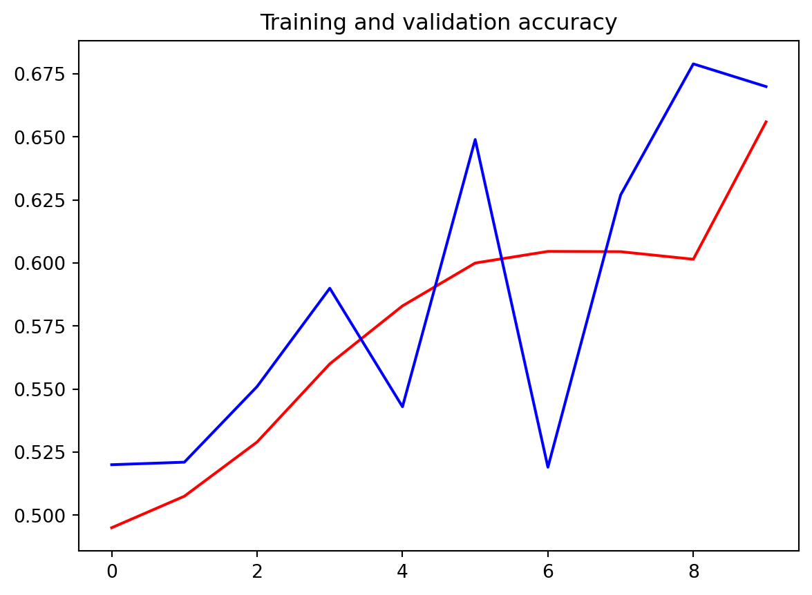
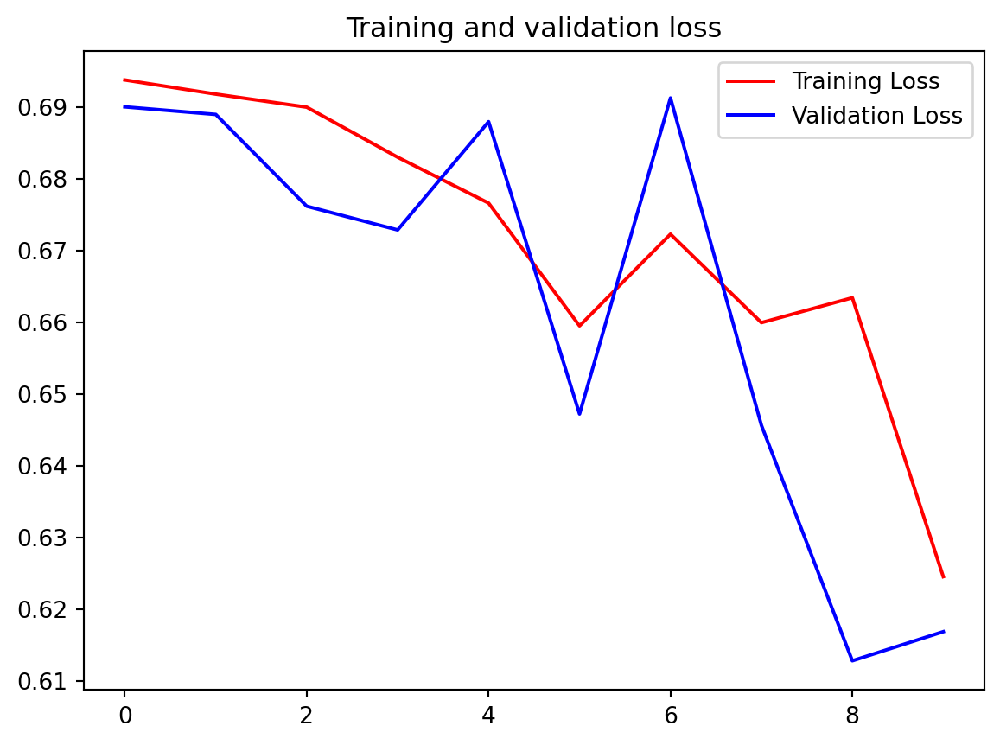

Code
import os
import zipfile
import random
import shutil
import tensorflow as tf
from tensorflow.keras.optimizers import RMSprop
from tensorflow.keras.preprocessing.image import ImageDataGenerator
from shutil import copyfile
from os import getcwd'/Users/jinchaoduan/Documents/R project/tensorflowing/Convolutional Neural Networks in TensorFlow'# grader-required-cell
source_path = '/tmp/PetImages'
source_path_dogs = os.path.join(source_path, 'Dog')
source_path_cats = os.path.join(source_path, 'Cat')
# os.listdir returns a list containing all files under the given path
print(f"There are {len(os.listdir(source_path_dogs))} images of dogs.")
print(f"There are {len(os.listdir(source_path_cats))} images of cats.")if not os.path.exists('./tmp/cats-v-dogs'):
os.mkdir('./tmp/cats-v-dogs')
if not os.path.exists('./tmp/cats-v-dogs/training'):
os.mkdir('./tmp/cats-v-dogs/training')
if not os.path.exists('./tmp/cats-v-dogs/testing'):
os.mkdir('./tmp/cats-v-dogs/testing')
if not os.path.exists('./tmp/cats-v-dogs/training/cats'):
os.mkdir('./tmp/cats-v-dogs/training/cats')
if not os.path.exists('./tmp/cats-v-dogs/training/dogs'):
os.mkdir('./tmp/cats-v-dogs/training/dogs')
if not os.path.exists('./tmp/cats-v-dogs/testing/cats'):
os.mkdir('./tmp/cats-v-dogs/testing/cats')
if not os.path.exists('./tmp/cats-v-dogs/testing/dogs'):
os.mkdir('./tmp/cats-v-dogs/testing/dogs')def split_data(SOURCE, TRAINING, TESTING, SPLIT_SIZE):
# YOUR CODE STARTS HERE
all_files = []
for file_name in os.listdir(SOURCE):
file_path = SOURCE + file_name
if os.path.getsize(file_path):
all_files.append(file_name)
else:
print('{} is zero length, so ignoring'.format(file_name))
n_files = len(all_files)
split_point = int(n_files * SPLIT_SIZE)
shuffled = random.sample(all_files, n_files)
train_set = shuffled[:split_point]
test_set = shuffled[split_point:]
for file_name in train_set:
copyfile(SOURCE + file_name, TRAINING + file_name)
for file_name in test_set:
copyfile(SOURCE + file_name, TESTING + file_name)split_size = .9
CAT_SOURCE_DIR = "./tmp/PetImages/Cat/"
TRAINING_CATS_DIR = "./tmp/cats-v-dogs/training/cats/"
TESTING_CATS_DIR = "./tmp/cats-v-dogs/testing/cats/"
DOG_SOURCE_DIR = "./tmp/PetImages/Dog/"
TRAINING_DOGS_DIR = "./tmp/cats-v-dogs/training/dogs/"
TESTING_DOGS_DIR = "./tmp/cats-v-dogs/testing/dogs/"12500
12500
6559
6454ImageDataGenerator: All images will be resized to 150x150 and do augmentation to aviod over fiting
# Flow training images in batches of 20 using train_datagen generator
train_generator = train_datagen.flow_from_directory(
train_dir, # This is the source directory for training images
target_size=(150, 150), # All images will be resized to 150x150
batch_size=20,
# Since we use binary_crossentropy loss, we need binary labels
class_mode='binary')
# Flow validation images in batches of 20 using test_datagen generator
validation_generator = test_datagen.flow_from_directory(
validation_dir,
target_size=(150, 150),
batch_size=20,
class_mode='binary')Found 24998 images belonging to 2 classes.
Found 13013 images belonging to 2 classes.import tensorflow as tf
# Build the model
model = tf.keras.models.Sequential([
# Note the input shape is the desired size of the image 300x300 with 3 bytes color
# This is the first convolution
tf.keras.layers.Conv2D(16, (3,3), activation='relu', input_shape=(150, 150, 3)),
tf.keras.layers.MaxPooling2D(2, 2),
# The second convolution
tf.keras.layers.Conv2D(32, (3,3), activation='relu'),
tf.keras.layers.MaxPooling2D(2,2),
# The third convolution
tf.keras.layers.Conv2D(64, (3,3), activation='relu'),
tf.keras.layers.MaxPooling2D(2,2),
# The fourth convolution
tf.keras.layers.Conv2D(64, (3,3), activation='relu'),
tf.keras.layers.MaxPooling2D(2,2),
# The fifth convolution
tf.keras.layers.Conv2D(64, (3,3), activation='relu'),
tf.keras.layers.MaxPooling2D(2,2),
# Flatten the results to feed into a DNN
tf.keras.layers.Flatten(),
# 512 neuron hidden layer
tf.keras.layers.Dense(512, activation='relu'),
# Only 1 output neuron. It will contain a value from 0-1 where 0 for 1 class ('horses') and 1 for the other ('humans')
tf.keras.layers.Dense(1, activation='sigmoid')
])Model: "sequential"
┏━━━━━━━━━━━━━━━━━━━━━━━━━━━━━━━━━┳━━━━━━━━━━━━━━━━━━━━━━━━┳━━━━━━━━━━━━━━━┓ ┃ Layer (type) ┃ Output Shape ┃ Param # ┃ ┡━━━━━━━━━━━━━━━━━━━━━━━━━━━━━━━━━╇━━━━━━━━━━━━━━━━━━━━━━━━╇━━━━━━━━━━━━━━━┩ │ conv2d (Conv2D) │ (None, 148, 148, 16) │ 448 │ ├─────────────────────────────────┼────────────────────────┼───────────────┤ │ max_pooling2d (MaxPooling2D) │ (None, 74, 74, 16) │ 0 │ ├─────────────────────────────────┼────────────────────────┼───────────────┤ │ conv2d_1 (Conv2D) │ (None, 72, 72, 32) │ 4,640 │ ├─────────────────────────────────┼────────────────────────┼───────────────┤ │ max_pooling2d_1 (MaxPooling2D) │ (None, 36, 36, 32) │ 0 │ ├─────────────────────────────────┼────────────────────────┼───────────────┤ │ conv2d_2 (Conv2D) │ (None, 34, 34, 64) │ 18,496 │ ├─────────────────────────────────┼────────────────────────┼───────────────┤ │ max_pooling2d_2 (MaxPooling2D) │ (None, 17, 17, 64) │ 0 │ ├─────────────────────────────────┼────────────────────────┼───────────────┤ │ conv2d_3 (Conv2D) │ (None, 15, 15, 64) │ 36,928 │ ├─────────────────────────────────┼────────────────────────┼───────────────┤ │ max_pooling2d_3 (MaxPooling2D) │ (None, 7, 7, 64) │ 0 │ ├─────────────────────────────────┼────────────────────────┼───────────────┤ │ conv2d_4 (Conv2D) │ (None, 5, 5, 64) │ 36,928 │ ├─────────────────────────────────┼────────────────────────┼───────────────┤ │ max_pooling2d_4 (MaxPooling2D) │ (None, 2, 2, 64) │ 0 │ ├─────────────────────────────────┼────────────────────────┼───────────────┤ │ flatten (Flatten) │ (None, 256) │ 0 │ ├─────────────────────────────────┼────────────────────────┼───────────────┤ │ dense (Dense) │ (None, 512) │ 131,584 │ ├─────────────────────────────────┼────────────────────────┼───────────────┤ │ dense_1 (Dense) │ (None, 1) │ 513 │ └─────────────────────────────────┴────────────────────────┴───────────────┘
Total params: 229,537 (896.63 KB)
Trainable params: 229,537 (896.63 KB)
Non-trainable params: 0 (0.00 B)
class myCallback(tf.keras.callbacks.Callback):
def on_epoch_end(self, epoch, logs={}):
'''
Halts the training when the loss falls below 0.1
Args:
epoch (integer) - index of epoch (required but unused in the function definition below)
logs (dict) - metric results from the training epoch
'''
# Check the loss
if(logs.get('loss') < 0.1):
# Stop if threshold is met
print("\nLoss is lower than 0.2 so cancelling training!")
print("cancelling training with:")
print(epoch+1)
self.model.stop_training = True
# Instantiate class
callbacks = myCallback()Epoch 1/10
1/100 ━━━━━━━━━━━━━━━━━━━━ 3:00 2s/step - accuracy: 0.4000 - loss: 0.6940 2/100 ━━━━━━━━━━━━━━━━━━━━ 10s 111ms/step - accuracy: 0.3875 - loss: 0.6970 3/100 ━━━━━━━━━━━━━━━━━━━━ 10s 112ms/step - accuracy: 0.3806 - loss: 0.6976 4/100 ━━━━━━━━━━━━━━━━━━━━ 11s 121ms/step - accuracy: 0.3729 - loss: 0.6980 5/100 ━━━━━━━━━━━━━━━━━━━━ 12s 130ms/step - accuracy: 0.3843 - loss: 0.6979 6/100 ━━━━━━━━━━━━━━━━━━━━ 12s 131ms/step - accuracy: 0.3939 - loss: 0.6977 7/100 ━━━━━━━━━━━━━━━━━━━━ 11s 126ms/step - accuracy: 0.4029 - loss: 0.6975 8/100 ━━━━━━━━━━━━━━━━━━━━ 12s 136ms/step - accuracy: 0.4072 - loss: 0.6974 9/100 ━━━━━━━━━━━━━━━━━━━━ 12s 134ms/step - accuracy: 0.4089 - loss: 0.6973 10/100 ━━━━━━━━━━━━━━━━━━━━ 11s 131ms/step - accuracy: 0.4095 - loss: 0.6973 11/100 ━━━━━━━━━━━━━━━━━━━━ 11s 132ms/step - accuracy: 0.4099 - loss: 0.6972 12/100 ━━━━━━━━━━━━━━━━━━━━ 11s 135ms/step - accuracy: 0.4091 - loss: 0.6971 13/100 ━━━━━━━━━━━━━━━━━━━━ 11s 133ms/step - accuracy: 0.4084 - loss: 0.6971 14/100 ━━━━━━━━━━━━━━━━━━━━ 11s 132ms/step - accuracy: 0.4083 - loss: 0.6970 15/100 ━━━━━━━━━━━━━━━━━━━━ 11s 136ms/step - accuracy: 0.4082 - loss: 0.6969 16/100 ━━━━━━━━━━━━━━━━━━━━ 11s 134ms/step - accuracy: 0.4088 - loss: 0.6969 17/100 ━━━━━━━━━━━━━━━━━━━━ 11s 134ms/step - accuracy: 0.4095 - loss: 0.6968 18/100 ━━━━━━━━━━━━━━━━━━━━ 10s 133ms/step - accuracy: 0.4104 - loss: 0.6967 19/100 ━━━━━━━━━━━━━━━━━━━━ 10s 135ms/step - accuracy: 0.4112 - loss: 0.6967 20/100 ━━━━━━━━━━━━━━━━━━━━ 10s 134ms/step - accuracy: 0.4124 - loss: 0.6966 21/100 ━━━━━━━━━━━━━━━━━━━━ 10s 134ms/step - accuracy: 0.4138 - loss: 0.6965 22/100 ━━━━━━━━━━━━━━━━━━━━ 10s 135ms/step - accuracy: 0.4154 - loss: 0.6964 23/100 ━━━━━━━━━━━━━━━━━━━━ 10s 137ms/step - accuracy: 0.4170 - loss: 0.6964 24/100 ━━━━━━━━━━━━━━━━━━━━ 10s 135ms/step - accuracy: 0.4185 - loss: 0.6963 25/100 ━━━━━━━━━━━━━━━━━━━━ 10s 135ms/step - accuracy: 0.4200 - loss: 0.6962 26/100 ━━━━━━━━━━━━━━━━━━━━ 10s 136ms/step - accuracy: 0.4215 - loss: 0.6961 27/100 ━━━━━━━━━━━━━━━━━━━━ 9s 135ms/step - accuracy: 0.4231 - loss: 0.6961 28/100 ━━━━━━━━━━━━━━━━━━━━ 9s 135ms/step - accuracy: 0.4246 - loss: 0.6960 29/100 ━━━━━━━━━━━━━━━━━━━━ 9s 137ms/step - accuracy: 0.4259 - loss: 0.6960 30/100 ━━━━━━━━━━━━━━━━━━━━ 9s 136ms/step - accuracy: 0.4272 - loss: 0.6959 31/100 ━━━━━━━━━━━━━━━━━━━━ 9s 136ms/step - accuracy: 0.4282 - loss: 0.6959 32/100 ━━━━━━━━━━━━━━━━━━━━ 9s 136ms/step - accuracy: 0.4292 - loss: 0.6958 33/100 ━━━━━━━━━━━━━━━━━━━━ 9s 137ms/step - accuracy: 0.4302 - loss: 0.6958 34/100 ━━━━━━━━━━━━━━━━━━━━ 8s 136ms/step - accuracy: 0.4311 - loss: 0.6958 35/100 ━━━━━━━━━━━━━━━━━━━━ 8s 136ms/step - accuracy: 0.4318 - loss: 0.6957 36/100 ━━━━━━━━━━━━━━━━━━━━ 8s 137ms/step - accuracy: 0.4326 - loss: 0.6957 37/100 ━━━━━━━━━━━━━━━━━━━━ 8s 136ms/step - accuracy: 0.4334 - loss: 0.6957 38/100 ━━━━━━━━━━━━━━━━━━━━ 8s 136ms/step - accuracy: 0.4341 - loss: 0.6957 39/100 ━━━━━━━━━━━━━━━━━━━━ 8s 136ms/step - accuracy: 0.4349 - loss: 0.6956 40/100 ━━━━━━━━━━━━━━━━━━━━ 8s 137ms/step - accuracy: 0.4356 - loss: 0.6956 41/100 ━━━━━━━━━━━━━━━━━━━━ 8s 136ms/step - accuracy: 0.4362 - loss: 0.6956 42/100 ━━━━━━━━━━━━━━━━━━━━ 7s 135ms/step - accuracy: 0.4369 - loss: 0.6955 43/100 ━━━━━━━━━━━━━━━━━━━━ 7s 137ms/step - accuracy: 0.4375 - loss: 0.6955 44/100 ━━━━━━━━━━━━━━━━━━━━ 7s 137ms/step - accuracy: 0.4383 - loss: 0.6955 45/100 ━━━━━━━━━━━━━━━━━━━━ 7s 136ms/step - accuracy: 0.4389 - loss: 0.6955 46/100 ━━━━━━━━━━━━━━━━━━━━ 7s 137ms/step - accuracy: 0.4395 - loss: 0.6954 47/100 ━━━━━━━━━━━━━━━━━━━━ 7s 137ms/step - accuracy: 0.4402 - loss: 0.6954 48/100 ━━━━━━━━━━━━━━━━━━━━ 7s 137ms/step - accuracy: 0.4409 - loss: 0.6954 49/100 ━━━━━━━━━━━━━━━━━━━━ 7s 137ms/step - accuracy: 0.4416 - loss: 0.6954 50/100 ━━━━━━━━━━━━━━━━━━━━ 6s 137ms/step - accuracy: 0.4423 - loss: 0.6953 51/100 ━━━━━━━━━━━━━━━━━━━━ 6s 137ms/step - accuracy: 0.4431 - loss: 0.6953 52/100 ━━━━━━━━━━━━━━━━━━━━ 6s 137ms/step - accuracy: 0.4438 - loss: 0.6953 53/100 ━━━━━━━━━━━━━━━━━━━━ 6s 138ms/step - accuracy: 0.4445 - loss: 0.6953 54/100 ━━━━━━━━━━━━━━━━━━━━ 6s 137ms/step - accuracy: 0.4452 - loss: 0.6952 55/100 ━━━━━━━━━━━━━━━━━━━━ 6s 138ms/step - accuracy: 0.4458 - loss: 0.6952 56/100 ━━━━━━━━━━━━━━━━━━━━ 6s 139ms/step - accuracy: 0.4463 - loss: 0.6952 57/100 ━━━━━━━━━━━━━━━━━━━━ 5s 139ms/step - accuracy: 0.4469 - loss: 0.6952 58/100 ━━━━━━━━━━━━━━━━━━━━ 5s 139ms/step - accuracy: 0.4474 - loss: 0.6952 59/100 ━━━━━━━━━━━━━━━━━━━━ 5s 139ms/step - accuracy: 0.4479 - loss: 0.6951 60/100 ━━━━━━━━━━━━━━━━━━━━ 5s 139ms/step - accuracy: 0.4484 - loss: 0.6951 61/100 ━━━━━━━━━━━━━━━━━━━━ 5s 139ms/step - accuracy: 0.4490 - loss: 0.6951 62/100 ━━━━━━━━━━━━━━━━━━━━ 5s 139ms/step - accuracy: 0.4495 - loss: 0.6951 63/100 ━━━━━━━━━━━━━━━━━━━━ 5s 140ms/step - accuracy: 0.4500 - loss: 0.6951 64/100 ━━━━━━━━━━━━━━━━━━━━ 5s 140ms/step - accuracy: 0.4505 - loss: 0.6951 65/100 ━━━━━━━━━━━━━━━━━━━━ 4s 139ms/step - accuracy: 0.4511 - loss: 0.6951 66/100 ━━━━━━━━━━━━━━━━━━━━ 4s 141ms/step - accuracy: 0.4515 - loss: 0.6950 67/100 ━━━━━━━━━━━━━━━━━━━━ 4s 140ms/step - accuracy: 0.4520 - loss: 0.6950 68/100 ━━━━━━━━━━━━━━━━━━━━ 4s 140ms/step - accuracy: 0.4525 - loss: 0.6950 69/100 ━━━━━━━━━━━━━━━━━━━━ 4s 140ms/step - accuracy: 0.4529 - loss: 0.6950 70/100 ━━━━━━━━━━━━━━━━━━━━ 4s 140ms/step - accuracy: 0.4534 - loss: 0.6950 71/100 ━━━━━━━━━━━━━━━━━━━━ 4s 140ms/step - accuracy: 0.4539 - loss: 0.6950 72/100 ━━━━━━━━━━━━━━━━━━━━ 3s 140ms/step - accuracy: 0.4543 - loss: 0.6950 73/100 ━━━━━━━━━━━━━━━━━━━━ 3s 140ms/step - accuracy: 0.4548 - loss: 0.6950 74/100 ━━━━━━━━━━━━━━━━━━━━ 3s 140ms/step - accuracy: 0.4552 - loss: 0.6949 75/100 ━━━━━━━━━━━━━━━━━━━━ 3s 140ms/step - accuracy: 0.4556 - loss: 0.6949 76/100 ━━━━━━━━━━━━━━━━━━━━ 3s 140ms/step - accuracy: 0.4561 - loss: 0.6949 77/100 ━━━━━━━━━━━━━━━━━━━━ 3s 139ms/step - accuracy: 0.4565 - loss: 0.6949 78/100 ━━━━━━━━━━━━━━━━━━━━ 3s 139ms/step - accuracy: 0.4569 - loss: 0.6949 79/100 ━━━━━━━━━━━━━━━━━━━━ 2s 139ms/step - accuracy: 0.4573 - loss: 0.6949 80/100 ━━━━━━━━━━━━━━━━━━━━ 2s 139ms/step - accuracy: 0.4577 - loss: 0.6949 81/100 ━━━━━━━━━━━━━━━━━━━━ 2s 139ms/step - accuracy: 0.4581 - loss: 0.6949 82/100 ━━━━━━━━━━━━━━━━━━━━ 2s 139ms/step - accuracy: 0.4584 - loss: 0.6949 83/100 ━━━━━━━━━━━━━━━━━━━━ 2s 139ms/step - accuracy: 0.4588 - loss: 0.6948 84/100 ━━━━━━━━━━━━━━━━━━━━ 2s 139ms/step - accuracy: 0.4591 - loss: 0.6948 85/100 ━━━━━━━━━━━━━━━━━━━━ 2s 138ms/step - accuracy: 0.4595 - loss: 0.6948 86/100 ━━━━━━━━━━━━━━━━━━━━ 1s 138ms/step - accuracy: 0.4598 - loss: 0.6948 87/100 ━━━━━━━━━━━━━━━━━━━━ 1s 138ms/step - accuracy: 0.4602 - loss: 0.6948 88/100 ━━━━━━━━━━━━━━━━━━━━ 1s 138ms/step - accuracy: 0.4605 - loss: 0.6948 89/100 ━━━━━━━━━━━━━━━━━━━━ 1s 138ms/step - accuracy: 0.4608 - loss: 0.6948 90/100 ━━━━━━━━━━━━━━━━━━━━ 1s 138ms/step - accuracy: 0.4611 - loss: 0.6948 91/100 ━━━━━━━━━━━━━━━━━━━━ 1s 138ms/step - accuracy: 0.4614 - loss: 0.6948 92/100 ━━━━━━━━━━━━━━━━━━━━ 1s 138ms/step - accuracy: 0.4618 - loss: 0.6948 93/100 ━━━━━━━━━━━━━━━━━━━━ 0s 138ms/step - accuracy: 0.4621 - loss: 0.6948 94/100 ━━━━━━━━━━━━━━━━━━━━ 0s 137ms/step - accuracy: 0.4625 - loss: 0.6947 95/100 ━━━━━━━━━━━━━━━━━━━━ 0s 137ms/step - accuracy: 0.4628 - loss: 0.6947 96/100 ━━━━━━━━━━━━━━━━━━━━ 0s 137ms/step - accuracy: 0.4632 - loss: 0.6947 97/100 ━━━━━━━━━━━━━━━━━━━━ 0s 137ms/step - accuracy: 0.4635 - loss: 0.6947 98/100 ━━━━━━━━━━━━━━━━━━━━ 0s 137ms/step - accuracy: 0.4638 - loss: 0.6947 99/100 ━━━━━━━━━━━━━━━━━━━━ 0s 137ms/step - accuracy: 0.4642 - loss: 0.6947100/100 ━━━━━━━━━━━━━━━━━━━━ 0s 137ms/step - accuracy: 0.4645 - loss: 0.6947100/100 ━━━━━━━━━━━━━━━━━━━━ 18s 160ms/step - accuracy: 0.4648 - loss: 0.6947 - val_accuracy: 0.5200 - val_loss: 0.6900
Epoch 2/10
1/100 ━━━━━━━━━━━━━━━━━━━━ 12s 126ms/step - accuracy: 0.5500 - loss: 0.6867 2/100 ━━━━━━━━━━━━━━━━━━━━ 11s 115ms/step - accuracy: 0.5250 - loss: 0.6898 3/100 ━━━━━━━━━━━━━━━━━━━━ 11s 124ms/step - accuracy: 0.5222 - loss: 0.6902 4/100 ━━━━━━━━━━━━━━━━━━━━ 12s 125ms/step - accuracy: 0.5198 - loss: 0.6906 5/100 ━━━━━━━━━━━━━━━━━━━━ 11s 126ms/step - accuracy: 0.5218 - loss: 0.6908 6/100 ━━━━━━━━━━━━━━━━━━━━ 12s 133ms/step - accuracy: 0.5265 - loss: 0.6905 7/100 ━━━━━━━━━━━━━━━━━━━━ 12s 130ms/step - accuracy: 0.5299 - loss: 0.6903 8/100 ━━━━━━━━━━━━━━━━━━━━ 11s 129ms/step - accuracy: 0.5316 - loss: 0.6902 9/100 ━━━━━━━━━━━━━━━━━━━━ 11s 128ms/step - accuracy: 0.5324 - loss: 0.6903 10/100 ━━━━━━━━━━━━━━━━━━━━ 11s 128ms/step - accuracy: 0.5342 - loss: 0.6902 11/100 ━━━━━━━━━━━━━━━━━━━━ 11s 128ms/step - accuracy: 0.5356 - loss: 0.6901 12/100 ━━━━━━━━━━━━━━━━━━━━ 11s 127ms/step - accuracy: 0.5372 - loss: 0.6899 13/100 ━━━━━━━━━━━━━━━━━━━━ 11s 128ms/step - accuracy: 0.5376 - loss: 0.6900 14/100 ━━━━━━━━━━━━━━━━━━━━ 10s 128ms/step - accuracy: 0.5384 - loss: 0.6899 15/100 ━━━━━━━━━━━━━━━━━━━━ 10s 128ms/step - accuracy: 0.5392 - loss: 0.6899 16/100 ━━━━━━━━━━━━━━━━━━━━ 10s 128ms/step - accuracy: 0.5397 - loss: 0.6898 17/100 ━━━━━━━━━━━━━━━━━━━━ 10s 128ms/step - accuracy: 0.5393 - loss: 0.6900 18/100 ━━━━━━━━━━━━━━━━━━━━ 10s 128ms/step - accuracy: 0.5385 - loss: 0.6901 19/100 ━━━━━━━━━━━━━━━━━━━━ 10s 128ms/step - accuracy: 0.5373 - loss: 0.6903 20/100 ━━━━━━━━━━━━━━━━━━━━ 10s 127ms/step - accuracy: 0.5364 - loss: 0.6904 21/100 ━━━━━━━━━━━━━━━━━━━━ 10s 127ms/step - accuracy: 0.5355 - loss: 0.6906 22/100 ━━━━━━━━━━━━━━━━━━━━ 9s 127ms/step - accuracy: 0.5343 - loss: 0.6907 23/100 ━━━━━━━━━━━━━━━━━━━━ 9s 127ms/step - accuracy: 0.5331 - loss: 0.6909 24/100 ━━━━━━━━━━━━━━━━━━━━ 9s 127ms/step - accuracy: 0.5318 - loss: 0.6910 25/100 ━━━━━━━━━━━━━━━━━━━━ 9s 127ms/step - accuracy: 0.5306 - loss: 0.6911 26/100 ━━━━━━━━━━━━━━━━━━━━ 9s 127ms/step - accuracy: 0.5296 - loss: 0.6912 27/100 ━━━━━━━━━━━━━━━━━━━━ 9s 127ms/step - accuracy: 0.5283 - loss: 0.6913 28/100 ━━━━━━━━━━━━━━━━━━━━ 9s 127ms/step - accuracy: 0.5271 - loss: 0.6914 29/100 ━━━━━━━━━━━━━━━━━━━━ 9s 127ms/step - accuracy: 0.5258 - loss: 0.6915 30/100 ━━━━━━━━━━━━━━━━━━━━ 8s 127ms/step - accuracy: 0.5248 - loss: 0.6916 31/100 ━━━━━━━━━━━━━━━━━━━━ 8s 127ms/step - accuracy: 0.5239 - loss: 0.6916 32/100 ━━━━━━━━━━━━━━━━━━━━ 8s 127ms/step - accuracy: 0.5230 - loss: 0.6917 33/100 ━━━━━━━━━━━━━━━━━━━━ 8s 127ms/step - accuracy: 0.5219 - loss: 0.6918 34/100 ━━━━━━━━━━━━━━━━━━━━ 8s 127ms/step - accuracy: 0.5208 - loss: 0.6919 35/100 ━━━━━━━━━━━━━━━━━━━━ 8s 128ms/step - accuracy: 0.5198 - loss: 0.6919 36/100 ━━━━━━━━━━━━━━━━━━━━ 8s 127ms/step - accuracy: 0.5190 - loss: 0.6920 37/100 ━━━━━━━━━━━━━━━━━━━━ 8s 127ms/step - accuracy: 0.5181 - loss: 0.6921 38/100 ━━━━━━━━━━━━━━━━━━━━ 7s 127ms/step - accuracy: 0.5173 - loss: 0.6921 39/100 ━━━━━━━━━━━━━━━━━━━━ 7s 127ms/step - accuracy: 0.5165 - loss: 0.6922 40/100 ━━━━━━━━━━━━━━━━━━━━ 7s 127ms/step - accuracy: 0.5159 - loss: 0.6922 41/100 ━━━━━━━━━━━━━━━━━━━━ 7s 127ms/step - accuracy: 0.5152 - loss: 0.6923 42/100 ━━━━━━━━━━━━━━━━━━━━ 7s 127ms/step - accuracy: 0.5145 - loss: 0.6923 43/100 ━━━━━━━━━━━━━━━━━━━━ 7s 127ms/step - accuracy: 0.5138 - loss: 0.6923 44/100 ━━━━━━━━━━━━━━━━━━━━ 7s 127ms/step - accuracy: 0.5133 - loss: 0.6924 45/100 ━━━━━━━━━━━━━━━━━━━━ 7s 127ms/step - accuracy: 0.5127 - loss: 0.6924 46/100 ━━━━━━━━━━━━━━━━━━━━ 6s 127ms/step - accuracy: 0.5122 - loss: 0.6924 47/100 ━━━━━━━━━━━━━━━━━━━━ 6s 128ms/step - accuracy: 0.5117 - loss: 0.6925 48/100 ━━━━━━━━━━━━━━━━━━━━ 6s 128ms/step - accuracy: 0.5111 - loss: 0.6925 49/100 ━━━━━━━━━━━━━━━━━━━━ 6s 128ms/step - accuracy: 0.5106 - loss: 0.6925 50/100 ━━━━━━━━━━━━━━━━━━━━ 6s 127ms/step - accuracy: 0.5100 - loss: 0.6926 51/100 ━━━━━━━━━━━━━━━━━━━━ 6s 128ms/step - accuracy: 0.5095 - loss: 0.6926 52/100 ━━━━━━━━━━━━━━━━━━━━ 6s 128ms/step - accuracy: 0.5089 - loss: 0.6926 53/100 ━━━━━━━━━━━━━━━━━━━━ 5s 128ms/step - accuracy: 0.5084 - loss: 0.6927 54/100 ━━━━━━━━━━━━━━━━━━━━ 5s 128ms/step - accuracy: 0.5079 - loss: 0.6927 55/100 ━━━━━━━━━━━━━━━━━━━━ 5s 127ms/step - accuracy: 0.5075 - loss: 0.6927 56/100 ━━━━━━━━━━━━━━━━━━━━ 5s 128ms/step - accuracy: 0.5071 - loss: 0.6927 57/100 ━━━━━━━━━━━━━━━━━━━━ 5s 128ms/step - accuracy: 0.5067 - loss: 0.6927 58/100 ━━━━━━━━━━━━━━━━━━━━ 5s 128ms/step - accuracy: 0.5064 - loss: 0.6928 59/100 ━━━━━━━━━━━━━━━━━━━━ 5s 128ms/step - accuracy: 0.5060 - loss: 0.6928 60/100 ━━━━━━━━━━━━━━━━━━━━ 5s 128ms/step - accuracy: 0.5057 - loss: 0.6928 61/100 ━━━━━━━━━━━━━━━━━━━━ 4s 128ms/step - accuracy: 0.5055 - loss: 0.6928 62/100 ━━━━━━━━━━━━━━━━━━━━ 4s 128ms/step - accuracy: 0.5052 - loss: 0.6928 63/100 ━━━━━━━━━━━━━━━━━━━━ 4s 128ms/step - accuracy: 0.5050 - loss: 0.6928 64/100 ━━━━━━━━━━━━━━━━━━━━ 4s 128ms/step - accuracy: 0.5047 - loss: 0.6928 65/100 ━━━━━━━━━━━━━━━━━━━━ 4s 128ms/step - accuracy: 0.5045 - loss: 0.6929 66/100 ━━━━━━━━━━━━━━━━━━━━ 4s 128ms/step - accuracy: 0.5043 - loss: 0.6929 67/100 ━━━━━━━━━━━━━━━━━━━━ 4s 128ms/step - accuracy: 0.5040 - loss: 0.6929 68/100 ━━━━━━━━━━━━━━━━━━━━ 4s 128ms/step - accuracy: 0.5039 - loss: 0.6929 69/100 ━━━━━━━━━━━━━━━━━━━━ 3s 128ms/step - accuracy: 0.5037 - loss: 0.6929 70/100 ━━━━━━━━━━━━━━━━━━━━ 3s 128ms/step - accuracy: 0.5036 - loss: 0.6929 71/100 ━━━━━━━━━━━━━━━━━━━━ 3s 128ms/step - accuracy: 0.5035 - loss: 0.6929 72/100 ━━━━━━━━━━━━━━━━━━━━ 3s 128ms/step - accuracy: 0.5034 - loss: 0.6929 73/100 ━━━━━━━━━━━━━━━━━━━━ 3s 128ms/step - accuracy: 0.5032 - loss: 0.6929 74/100 ━━━━━━━━━━━━━━━━━━━━ 3s 128ms/step - accuracy: 0.5031 - loss: 0.6929 75/100 ━━━━━━━━━━━━━━━━━━━━ 3s 128ms/step - accuracy: 0.5031 - loss: 0.6930 76/100 ━━━━━━━━━━━━━━━━━━━━ 3s 128ms/step - accuracy: 0.5030 - loss: 0.6930 77/100 ━━━━━━━━━━━━━━━━━━━━ 2s 128ms/step - accuracy: 0.5029 - loss: 0.6930 78/100 ━━━━━━━━━━━━━━━━━━━━ 2s 128ms/step - accuracy: 0.5028 - loss: 0.6930 79/100 ━━━━━━━━━━━━━━━━━━━━ 2s 129ms/step - accuracy: 0.5028 - loss: 0.6930 80/100 ━━━━━━━━━━━━━━━━━━━━ 2s 129ms/step - accuracy: 0.5027 - loss: 0.6930 81/100 ━━━━━━━━━━━━━━━━━━━━ 2s 129ms/step - accuracy: 0.5027 - loss: 0.6930 82/100 ━━━━━━━━━━━━━━━━━━━━ 2s 129ms/step - accuracy: 0.5026 - loss: 0.6930 83/100 ━━━━━━━━━━━━━━━━━━━━ 2s 129ms/step - accuracy: 0.5025 - loss: 0.6930 84/100 ━━━━━━━━━━━━━━━━━━━━ 2s 129ms/step - accuracy: 0.5025 - loss: 0.6930 85/100 ━━━━━━━━━━━━━━━━━━━━ 1s 129ms/step - accuracy: 0.5024 - loss: 0.6930 86/100 ━━━━━━━━━━━━━━━━━━━━ 1s 129ms/step - accuracy: 0.5024 - loss: 0.6930 87/100 ━━━━━━━━━━━━━━━━━━━━ 1s 129ms/step - accuracy: 0.5023 - loss: 0.6930 88/100 ━━━━━━━━━━━━━━━━━━━━ 1s 129ms/step - accuracy: 0.5023 - loss: 0.6930 89/100 ━━━━━━━━━━━━━━━━━━━━ 1s 130ms/step - accuracy: 0.5022 - loss: 0.6930 90/100 ━━━━━━━━━━━━━━━━━━━━ 1s 130ms/step - accuracy: 0.5021 - loss: 0.6930 91/100 ━━━━━━━━━━━━━━━━━━━━ 1s 131ms/step - accuracy: 0.5021 - loss: 0.6930 92/100 ━━━━━━━━━━━━━━━━━━━━ 1s 131ms/step - accuracy: 0.5021 - loss: 0.6930 93/100 ━━━━━━━━━━━━━━━━━━━━ 0s 131ms/step - accuracy: 0.5022 - loss: 0.6930 94/100 ━━━━━━━━━━━━━━━━━━━━ 0s 131ms/step - accuracy: 0.5022 - loss: 0.6930 95/100 ━━━━━━━━━━━━━━━━━━━━ 0s 131ms/step - accuracy: 0.5022 - loss: 0.6930 96/100 ━━━━━━━━━━━━━━━━━━━━ 0s 131ms/step - accuracy: 0.5022 - loss: 0.6930 97/100 ━━━━━━━━━━━━━━━━━━━━ 0s 131ms/step - accuracy: 0.5022 - loss: 0.6930 98/100 ━━━━━━━━━━━━━━━━━━━━ 0s 131ms/step - accuracy: 0.5023 - loss: 0.6929 99/100 ━━━━━━━━━━━━━━━━━━━━ 0s 131ms/step - accuracy: 0.5023 - loss: 0.6929100/100 ━━━━━━━━━━━━━━━━━━━━ 0s 131ms/step - accuracy: 0.5024 - loss: 0.6929100/100 ━━━━━━━━━━━━━━━━━━━━ 15s 154ms/step - accuracy: 0.5024 - loss: 0.6929 - val_accuracy: 0.5210 - val_loss: 0.6889
Epoch 3/10
1/100 ━━━━━━━━━━━━━━━━━━━━ 11s 118ms/step - accuracy: 0.5000 - loss: 0.6951 2/100 ━━━━━━━━━━━━━━━━━━━━ 16s 171ms/step - accuracy: 0.5125 - loss: 0.6952 3/100 ━━━━━━━━━━━━━━━━━━━━ 15s 163ms/step - accuracy: 0.4917 - loss: 0.7006 4/100 ━━━━━━━━━━━━━━━━━━━━ 14s 146ms/step - accuracy: 0.4875 - loss: 0.7014 5/100 ━━━━━━━━━━━━━━━━━━━━ 14s 147ms/step - accuracy: 0.4800 - loss: 0.7024 6/100 ━━━━━━━━━━━━━━━━━━━━ 14s 150ms/step - accuracy: 0.4764 - loss: 0.7027 7/100 ━━━━━━━━━━━━━━━━━━━━ 13s 143ms/step - accuracy: 0.4706 - loss: 0.7030 8/100 ━━━━━━━━━━━━━━━━━━━━ 12s 141ms/step - accuracy: 0.4657 - loss: 0.7030 9/100 ━━━━━━━━━━━━━━━━━━━━ 12s 139ms/step - accuracy: 0.4621 - loss: 0.7030 10/100 ━━━━━━━━━━━━━━━━━━━━ 13s 145ms/step - accuracy: 0.4594 - loss: 0.7029 11/100 ━━━━━━━━━━━━━━━━━━━━ 12s 144ms/step - accuracy: 0.4589 - loss: 0.7028 12/100 ━━━━━━━━━━━━━━━━━━━━ 12s 143ms/step - accuracy: 0.4578 - loss: 0.7026 13/100 ━━━━━━━━━━━━━━━━━━━━ 12s 146ms/step - accuracy: 0.4572 - loss: 0.7024 14/100 ━━━━━━━━━━━━━━━━━━━━ 12s 145ms/step - accuracy: 0.4570 - loss: 0.7022 15/100 ━━━━━━━━━━━━━━━━━━━━ 12s 144ms/step - accuracy: 0.4567 - loss: 0.7020 16/100 ━━━━━━━━━━━━━━━━━━━━ 12s 145ms/step - accuracy: 0.4565 - loss: 0.7018 17/100 ━━━━━━━━━━━━━━━━━━━━ 11s 143ms/step - accuracy: 0.4570 - loss: 0.7016 18/100 ━━━━━━━━━━━━━━━━━━━━ 11s 142ms/step - accuracy: 0.4574 - loss: 0.7014 19/100 ━━━━━━━━━━━━━━━━━━━━ 11s 144ms/step - accuracy: 0.4577 - loss: 0.7012 20/100 ━━━━━━━━━━━━━━━━━━━━ 11s 143ms/step - accuracy: 0.4579 - loss: 0.7010 21/100 ━━━━━━━━━━━━━━━━━━━━ 11s 142ms/step - accuracy: 0.4582 - loss: 0.7009 22/100 ━━━━━━━━━━━━━━━━━━━━ 11s 142ms/step - accuracy: 0.4590 - loss: 0.7007 23/100 ━━━━━━━━━━━━━━━━━━━━ 11s 144ms/step - accuracy: 0.4594 - loss: 0.7005 24/100 ━━━━━━━━━━━━━━━━━━━━ 10s 144ms/step - accuracy: 0.4601 - loss: 0.7003 25/100 ━━━━━━━━━━━━━━━━━━━━ 10s 142ms/step - accuracy: 0.4608 - loss: 0.7001 26/100 ━━━━━━━━━━━━━━━━━━━━ 10s 144ms/step - accuracy: 0.4614 - loss: 0.7000 27/100 ━━━━━━━━━━━━━━━━━━━━ 10s 143ms/step - accuracy: 0.4619 - loss: 0.6998 28/100 ━━━━━━━━━━━━━━━━━━━━ 10s 142ms/step - accuracy: 0.4624 - loss: 0.6997 29/100 ━━━━━━━━━━━━━━━━━━━━ 10s 143ms/step - accuracy: 0.4629 - loss: 0.6995 30/100 ━━━━━━━━━━━━━━━━━━━━ 9s 143ms/step - accuracy: 0.4632 - loss: 0.6994 31/100 ━━━━━━━━━━━━━━━━━━━━ 9s 142ms/step - accuracy: 0.4635 - loss: 0.6993 32/100 ━━━━━━━━━━━━━━━━━━━━ 9s 142ms/step - accuracy: 0.4640 - loss: 0.6991 33/100 ━━━━━━━━━━━━━━━━━━━━ 9s 142ms/step - accuracy: 0.4646 - loss: 0.6990 34/100 ━━━━━━━━━━━━━━━━━━━━ 9s 141ms/step - accuracy: 0.4652 - loss: 0.6988 35/100 ━━━━━━━━━━━━━━━━━━━━ 9s 141ms/step - accuracy: 0.4659 - loss: 0.6987 36/100 ━━━━━━━━━━━━━━━━━━━━ 9s 141ms/step - accuracy: 0.4664 - loss: 0.6985 37/100 ━━━━━━━━━━━━━━━━━━━━ 8s 142ms/step - accuracy: 0.4670 - loss: 0.6984 38/100 ━━━━━━━━━━━━━━━━━━━━ 8s 141ms/step - accuracy: 0.4677 - loss: 0.6983 39/100 ━━━━━━━━━━━━━━━━━━━━ 8s 140ms/step - accuracy: 0.4682 - loss: 0.6982 40/100 ━━━━━━━━━━━━━━━━━━━━ 8s 141ms/step - accuracy: 0.4687 - loss: 0.6981 41/100 ━━━━━━━━━━━━━━━━━━━━ 8s 141ms/step - accuracy: 0.4693 - loss: 0.6980 42/100 ━━━━━━━━━━━━━━━━━━━━ 8s 140ms/step - accuracy: 0.4698 - loss: 0.6979 43/100 ━━━━━━━━━━━━━━━━━━━━ 8s 141ms/step - accuracy: 0.4704 - loss: 0.6978 44/100 ━━━━━━━━━━━━━━━━━━━━ 7s 141ms/step - accuracy: 0.4710 - loss: 0.6976 45/100 ━━━━━━━━━━━━━━━━━━━━ 7s 140ms/step - accuracy: 0.4717 - loss: 0.6975 46/100 ━━━━━━━━━━━━━━━━━━━━ 7s 140ms/step - accuracy: 0.4724 - loss: 0.6974 47/100 ━━━━━━━━━━━━━━━━━━━━ 7s 140ms/step - accuracy: 0.4730 - loss: 0.6973 48/100 ━━━━━━━━━━━━━━━━━━━━ 7s 140ms/step - accuracy: 0.4737 - loss: 0.6971 49/100 ━━━━━━━━━━━━━━━━━━━━ 7s 140ms/step - accuracy: 0.4744 - loss: 0.6970 50/100 ━━━━━━━━━━━━━━━━━━━━ 6s 139ms/step - accuracy: 0.4751 - loss: 0.6969 51/100 ━━━━━━━━━━━━━━━━━━━━ 6s 140ms/step - accuracy: 0.4757 - loss: 0.6967 52/100 ━━━━━━━━━━━━━━━━━━━━ 6s 139ms/step - accuracy: 0.4764 - loss: 0.6966 53/100 ━━━━━━━━━━━━━━━━━━━━ 6s 139ms/step - accuracy: 0.4771 - loss: 0.6965 54/100 ━━━━━━━━━━━━━━━━━━━━ 6s 140ms/step - accuracy: 0.4777 - loss: 0.6963 55/100 ━━━━━━━━━━━━━━━━━━━━ 6s 140ms/step - accuracy: 0.4784 - loss: 0.6962 56/100 ━━━━━━━━━━━━━━━━━━━━ 6s 139ms/step - accuracy: 0.4790 - loss: 0.6961 57/100 ━━━━━━━━━━━━━━━━━━━━ 6s 140ms/step - accuracy: 0.4796 - loss: 0.6960 58/100 ━━━━━━━━━━━━━━━━━━━━ 5s 140ms/step - accuracy: 0.4802 - loss: 0.6959 59/100 ━━━━━━━━━━━━━━━━━━━━ 5s 139ms/step - accuracy: 0.4808 - loss: 0.6958 60/100 ━━━━━━━━━━━━━━━━━━━━ 5s 140ms/step - accuracy: 0.4814 - loss: 0.6958 61/100 ━━━━━━━━━━━━━━━━━━━━ 5s 140ms/step - accuracy: 0.4821 - loss: 0.6956 62/100 ━━━━━━━━━━━━━━━━━━━━ 5s 139ms/step - accuracy: 0.4828 - loss: 0.6955 63/100 ━━━━━━━━━━━━━━━━━━━━ 5s 139ms/step - accuracy: 0.4835 - loss: 0.6954 64/100 ━━━━━━━━━━━━━━━━━━━━ 5s 140ms/step - accuracy: 0.4842 - loss: 0.6953 65/100 ━━━━━━━━━━━━━━━━━━━━ 4s 139ms/step - accuracy: 0.4848 - loss: 0.6952 66/100 ━━━━━━━━━━━━━━━━━━━━ 4s 139ms/step - accuracy: 0.4855 - loss: 0.6951 67/100 ━━━━━━━━━━━━━━━━━━━━ 4s 139ms/step - accuracy: 0.4861 - loss: 0.6950 68/100 ━━━━━━━━━━━━━━━━━━━━ 4s 140ms/step - accuracy: 0.4868 - loss: 0.6949 69/100 ━━━━━━━━━━━━━━━━━━━━ 4s 139ms/step - accuracy: 0.4874 - loss: 0.6949 70/100 ━━━━━━━━━━━━━━━━━━━━ 4s 139ms/step - accuracy: 0.4880 - loss: 0.6948 71/100 ━━━━━━━━━━━━━━━━━━━━ 4s 139ms/step - accuracy: 0.4886 - loss: 0.6947 72/100 ━━━━━━━━━━━━━━━━━━━━ 3s 139ms/step - accuracy: 0.4892 - loss: 0.6946 73/100 ━━━━━━━━━━━━━━━━━━━━ 3s 139ms/step - accuracy: 0.4897 - loss: 0.6946 74/100 ━━━━━━━━━━━━━━━━━━━━ 3s 139ms/step - accuracy: 0.4902 - loss: 0.6945 75/100 ━━━━━━━━━━━━━━━━━━━━ 3s 139ms/step - accuracy: 0.4907 - loss: 0.6944 76/100 ━━━━━━━━━━━━━━━━━━━━ 3s 139ms/step - accuracy: 0.4912 - loss: 0.6944 77/100 ━━━━━━━━━━━━━━━━━━━━ 3s 138ms/step - accuracy: 0.4917 - loss: 0.6943 78/100 ━━━━━━━━━━━━━━━━━━━━ 3s 139ms/step - accuracy: 0.4922 - loss: 0.6942 79/100 ━━━━━━━━━━━━━━━━━━━━ 2s 140ms/step - accuracy: 0.4926 - loss: 0.6942 80/100 ━━━━━━━━━━━━━━━━━━━━ 2s 140ms/step - accuracy: 0.4930 - loss: 0.6942 81/100 ━━━━━━━━━━━━━━━━━━━━ 2s 140ms/step - accuracy: 0.4934 - loss: 0.6941 82/100 ━━━━━━━━━━━━━━━━━━━━ 2s 140ms/step - accuracy: 0.4938 - loss: 0.6941 83/100 ━━━━━━━━━━━━━━━━━━━━ 2s 140ms/step - accuracy: 0.4943 - loss: 0.6940 84/100 ━━━━━━━━━━━━━━━━━━━━ 2s 141ms/step - accuracy: 0.4946 - loss: 0.6940 85/100 ━━━━━━━━━━━━━━━━━━━━ 2s 140ms/step - accuracy: 0.4950 - loss: 0.6939 86/100 ━━━━━━━━━━━━━━━━━━━━ 1s 140ms/step - accuracy: 0.4954 - loss: 0.6939 87/100 ━━━━━━━━━━━━━━━━━━━━ 1s 140ms/step - accuracy: 0.4958 - loss: 0.6938 88/100 ━━━━━━━━━━━━━━━━━━━━ 1s 140ms/step - accuracy: 0.4961 - loss: 0.6938 89/100 ━━━━━━━━━━━━━━━━━━━━ 1s 140ms/step - accuracy: 0.4965 - loss: 0.6938 90/100 ━━━━━━━━━━━━━━━━━━━━ 1s 140ms/step - accuracy: 0.4968 - loss: 0.6937 91/100 ━━━━━━━━━━━━━━━━━━━━ 1s 140ms/step - accuracy: 0.4971 - loss: 0.6937 92/100 ━━━━━━━━━━━━━━━━━━━━ 1s 140ms/step - accuracy: 0.4974 - loss: 0.6936 93/100 ━━━━━━━━━━━━━━━━━━━━ 0s 140ms/step - accuracy: 0.4977 - loss: 0.6936 94/100 ━━━━━━━━━━━━━━━━━━━━ 0s 140ms/step - accuracy: 0.4980 - loss: 0.6936 95/100 ━━━━━━━━━━━━━━━━━━━━ 0s 140ms/step - accuracy: 0.4982 - loss: 0.6935 96/100 ━━━━━━━━━━━━━━━━━━━━ 0s 140ms/step - accuracy: 0.4985 - loss: 0.6935 97/100 ━━━━━━━━━━━━━━━━━━━━ 0s 140ms/step - accuracy: 0.4988 - loss: 0.6935 98/100 ━━━━━━━━━━━━━━━━━━━━ 0s 140ms/step - accuracy: 0.4991 - loss: 0.6934 99/100 ━━━━━━━━━━━━━━━━━━━━ 0s 140ms/step - accuracy: 0.4994 - loss: 0.6934100/100 ━━━━━━━━━━━━━━━━━━━━ 0s 140ms/step - accuracy: 0.4997 - loss: 0.6934100/100 ━━━━━━━━━━━━━━━━━━━━ 16s 163ms/step - accuracy: 0.5000 - loss: 0.6933 - val_accuracy: 0.5510 - val_loss: 0.6762
Epoch 4/10
1/100 ━━━━━━━━━━━━━━━━━━━━ 15s 159ms/step - accuracy: 0.5000 - loss: 0.6858 2/100 ━━━━━━━━━━━━━━━━━━━━ 10s 103ms/step - accuracy: 0.5250 - loss: 0.6898 3/100 ━━━━━━━━━━━━━━━━━━━━ 11s 115ms/step - accuracy: 0.5500 - loss: 0.6873 4/100 ━━━━━━━━━━━━━━━━━━━━ 12s 135ms/step - accuracy: 0.5656 - loss: 0.6852 5/100 ━━━━━━━━━━━━━━━━━━━━ 12s 131ms/step - accuracy: 0.5745 - loss: 0.6830 6/100 ━━━━━━━━━━━━━━━━━━━━ 12s 130ms/step - accuracy: 0.5815 - loss: 0.6808 7/100 ━━━━━━━━━━━━━━━━━━━━ 11s 126ms/step - accuracy: 0.5852 - loss: 0.6798 8/100 ━━━━━━━━━━━━━━━━━━━━ 12s 135ms/step - accuracy: 0.5894 - loss: 0.6785 9/100 ━━━━━━━━━━━━━━━━━━━━ 12s 133ms/step - accuracy: 0.5918 - loss: 0.6777 10/100 ━━━━━━━━━━━━━━━━━━━━ 12s 134ms/step - accuracy: 0.5936 - loss: 0.6769 11/100 ━━━━━━━━━━━━━━━━━━━━ 12s 142ms/step - accuracy: 0.5946 - loss: 0.6764 12/100 ━━━━━━━━━━━━━━━━━━━━ 12s 139ms/step - accuracy: 0.5937 - loss: 0.6770 13/100 ━━━━━━━━━━━━━━━━━━━━ 11s 138ms/step - accuracy: 0.5912 - loss: 0.6777 14/100 ━━━━━━━━━━━━━━━━━━━━ 11s 137ms/step - accuracy: 0.5880 - loss: 0.6785 15/100 ━━━━━━━━━━━━━━━━━━━━ 11s 140ms/step - accuracy: 0.5864 - loss: 0.6791 16/100 ━━━━━━━━━━━━━━━━━━━━ 11s 138ms/step - accuracy: 0.5855 - loss: 0.6794 17/100 ━━━━━━━━━━━━━━━━━━━━ 11s 138ms/step - accuracy: 0.5848 - loss: 0.6795 18/100 ━━━━━━━━━━━━━━━━━━━━ 11s 142ms/step - accuracy: 0.5833 - loss: 0.6800 19/100 ━━━━━━━━━━━━━━━━━━━━ 11s 140ms/step - accuracy: 0.5819 - loss: 0.6803 20/100 ━━━━━━━━━━━━━━━━━━━━ 11s 141ms/step - accuracy: 0.5805 - loss: 0.6807 21/100 ━━━━━━━━━━━━━━━━━━━━ 11s 142ms/step - accuracy: 0.5789 - loss: 0.6811 22/100 ━━━━━━━━━━━━━━━━━━━━ 11s 141ms/step - accuracy: 0.5780 - loss: 0.6814 23/100 ━━━━━━━━━━━━━━━━━━━━ 10s 140ms/step - accuracy: 0.5772 - loss: 0.6816 24/100 ━━━━━━━━━━━━━━━━━━━━ 10s 143ms/step - accuracy: 0.5765 - loss: 0.6817 25/100 ━━━━━━━━━━━━━━━━━━━━ 10s 142ms/step - accuracy: 0.5761 - loss: 0.6819 26/100 ━━━━━━━━━━━━━━━━━━━━ 10s 140ms/step - accuracy: 0.5758 - loss: 0.6819 27/100 ━━━━━━━━━━━━━━━━━━━━ 10s 141ms/step - accuracy: 0.5756 - loss: 0.6819 28/100 ━━━━━━━━━━━━━━━━━━━━ 10s 141ms/step - accuracy: 0.5751 - loss: 0.6820 29/100 ━━━━━━━━━━━━━━━━━━━━ 9s 140ms/step - accuracy: 0.5746 - loss: 0.6821 30/100 ━━━━━━━━━━━━━━━━━━━━ 9s 140ms/step - accuracy: 0.5741 - loss: 0.6822 31/100 ━━━━━━━━━━━━━━━━━━━━ 9s 141ms/step - accuracy: 0.5737 - loss: 0.6823 32/100 ━━━━━━━━━━━━━━━━━━━━ 9s 141ms/step - accuracy: 0.5733 - loss: 0.6824 33/100 ━━━━━━━━━━━━━━━━━━━━ 9s 140ms/step - accuracy: 0.5729 - loss: 0.6824 34/100 ━━━━━━━━━━━━━━━━━━━━ 9s 141ms/step - accuracy: 0.5726 - loss: 0.6825 35/100 ━━━━━━━━━━━━━━━━━━━━ 9s 140ms/step - accuracy: 0.5722 - loss: 0.6826 36/100 ━━━━━━━━━━━━━━━━━━━━ 8s 140ms/step - accuracy: 0.5719 - loss: 0.6826 37/100 ━━━━━━━━━━━━━━━━━━━━ 8s 140ms/step - accuracy: 0.5717 - loss: 0.6827 38/100 ━━━━━━━━━━━━━━━━━━━━ 8s 141ms/step - accuracy: 0.5715 - loss: 0.6827 39/100 ━━━━━━━━━━━━━━━━━━━━ 8s 140ms/step - accuracy: 0.5713 - loss: 0.6827 40/100 ━━━━━━━━━━━━━━━━━━━━ 8s 140ms/step - accuracy: 0.5711 - loss: 0.6827 41/100 ━━━━━━━━━━━━━━━━━━━━ 8s 141ms/step - accuracy: 0.5708 - loss: 0.6828 42/100 ━━━━━━━━━━━━━━━━━━━━ 8s 140ms/step - accuracy: 0.5705 - loss: 0.6828 43/100 ━━━━━━━━━━━━━━━━━━━━ 7s 140ms/step - accuracy: 0.5702 - loss: 0.6829 44/100 ━━━━━━━━━━━━━━━━━━━━ 7s 140ms/step - accuracy: 0.5698 - loss: 0.6829 45/100 ━━━━━━━━━━━━━━━━━━━━ 7s 140ms/step - accuracy: 0.5694 - loss: 0.6829 46/100 ━━━━━━━━━━━━━━━━━━━━ 7s 140ms/step - accuracy: 0.5691 - loss: 0.6830 47/100 ━━━━━━━━━━━━━━━━━━━━ 7s 140ms/step - accuracy: 0.5689 - loss: 0.6830 48/100 ━━━━━━━━━━━━━━━━━━━━ 7s 142ms/step - accuracy: 0.5686 - loss: 0.6830 49/100 ━━━━━━━━━━━━━━━━━━━━ 7s 141ms/step - accuracy: 0.5684 - loss: 0.6830 50/100 ━━━━━━━━━━━━━━━━━━━━ 7s 140ms/step - accuracy: 0.5681 - loss: 0.6829 51/100 ━━━━━━━━━━━━━━━━━━━━ 6s 142ms/step - accuracy: 0.5679 - loss: 0.6829 52/100 ━━━━━━━━━━━━━━━━━━━━ 6s 141ms/step - accuracy: 0.5677 - loss: 0.6829 53/100 ━━━━━━━━━━━━━━━━━━━━ 6s 141ms/step - accuracy: 0.5675 - loss: 0.6829 54/100 ━━━━━━━━━━━━━━━━━━━━ 6s 141ms/step - accuracy: 0.5674 - loss: 0.6829 55/100 ━━━━━━━━━━━━━━━━━━━━ 6s 141ms/step - accuracy: 0.5672 - loss: 0.6829 56/100 ━━━━━━━━━━━━━━━━━━━━ 6s 141ms/step - accuracy: 0.5670 - loss: 0.6828 57/100 ━━━━━━━━━━━━━━━━━━━━ 6s 142ms/step - accuracy: 0.5669 - loss: 0.6828 58/100 ━━━━━━━━━━━━━━━━━━━━ 5s 141ms/step - accuracy: 0.5668 - loss: 0.6828 59/100 ━━━━━━━━━━━━━━━━━━━━ 5s 141ms/step - accuracy: 0.5667 - loss: 0.6828 60/100 ━━━━━━━━━━━━━━━━━━━━ 5s 141ms/step - accuracy: 0.5667 - loss: 0.6828 61/100 ━━━━━━━━━━━━━━━━━━━━ 5s 141ms/step - accuracy: 0.5667 - loss: 0.6828 62/100 ━━━━━━━━━━━━━━━━━━━━ 5s 141ms/step - accuracy: 0.5667 - loss: 0.6828 63/100 ━━━━━━━━━━━━━━━━━━━━ 5s 140ms/step - accuracy: 0.5667 - loss: 0.6828 64/100 ━━━━━━━━━━━━━━━━━━━━ 5s 141ms/step - accuracy: 0.5666 - loss: 0.6828 65/100 ━━━━━━━━━━━━━━━━━━━━ 4s 141ms/step - accuracy: 0.5666 - loss: 0.6829 66/100 ━━━━━━━━━━━━━━━━━━━━ 4s 141ms/step - accuracy: 0.5665 - loss: 0.6829 67/100 ━━━━━━━━━━━━━━━━━━━━ 4s 141ms/step - accuracy: 0.5665 - loss: 0.6829 68/100 ━━━━━━━━━━━━━━━━━━━━ 4s 141ms/step - accuracy: 0.5665 - loss: 0.6829 69/100 ━━━━━━━━━━━━━━━━━━━━ 4s 140ms/step - accuracy: 0.5665 - loss: 0.6829 70/100 ━━━━━━━━━━━━━━━━━━━━ 4s 140ms/step - accuracy: 0.5665 - loss: 0.6829 71/100 ━━━━━━━━━━━━━━━━━━━━ 4s 140ms/step - accuracy: 0.5665 - loss: 0.6829 72/100 ━━━━━━━━━━━━━━━━━━━━ 3s 140ms/step - accuracy: 0.5664 - loss: 0.6829 73/100 ━━━━━━━━━━━━━━━━━━━━ 3s 140ms/step - accuracy: 0.5664 - loss: 0.6829 74/100 ━━━━━━━━━━━━━━━━━━━━ 3s 140ms/step - accuracy: 0.5664 - loss: 0.6829 75/100 ━━━━━━━━━━━━━━━━━━━━ 3s 140ms/step - accuracy: 0.5663 - loss: 0.6829 76/100 ━━━━━━━━━━━━━━━━━━━━ 3s 140ms/step - accuracy: 0.5663 - loss: 0.6829 77/100 ━━━━━━━━━━━━━━━━━━━━ 3s 139ms/step - accuracy: 0.5662 - loss: 0.6830 78/100 ━━━━━━━━━━━━━━━━━━━━ 3s 140ms/step - accuracy: 0.5661 - loss: 0.6830 79/100 ━━━━━━━━━━━━━━━━━━━━ 2s 140ms/step - accuracy: 0.5661 - loss: 0.6830 80/100 ━━━━━━━━━━━━━━━━━━━━ 2s 140ms/step - accuracy: 0.5660 - loss: 0.6830 81/100 ━━━━━━━━━━━━━━━━━━━━ 2s 139ms/step - accuracy: 0.5659 - loss: 0.6831 82/100 ━━━━━━━━━━━━━━━━━━━━ 2s 140ms/step - accuracy: 0.5658 - loss: 0.6831 83/100 ━━━━━━━━━━━━━━━━━━━━ 2s 140ms/step - accuracy: 0.5656 - loss: 0.6831 84/100 ━━━━━━━━━━━━━━━━━━━━ 2s 140ms/step - accuracy: 0.5655 - loss: 0.6831 85/100 ━━━━━━━━━━━━━━━━━━━━ 2s 140ms/step - accuracy: 0.5654 - loss: 0.6831 86/100 ━━━━━━━━━━━━━━━━━━━━ 1s 140ms/step - accuracy: 0.5654 - loss: 0.6831 87/100 ━━━━━━━━━━━━━━━━━━━━ 1s 140ms/step - accuracy: 0.5653 - loss: 0.6831 88/100 ━━━━━━━━━━━━━━━━━━━━ 1s 140ms/step - accuracy: 0.5653 - loss: 0.6831 89/100 ━━━━━━━━━━━━━━━━━━━━ 1s 140ms/step - accuracy: 0.5652 - loss: 0.6831 90/100 ━━━━━━━━━━━━━━━━━━━━ 1s 140ms/step - accuracy: 0.5651 - loss: 0.6831 91/100 ━━━━━━━━━━━━━━━━━━━━ 1s 139ms/step - accuracy: 0.5651 - loss: 0.6831 92/100 ━━━━━━━━━━━━━━━━━━━━ 1s 140ms/step - accuracy: 0.5650 - loss: 0.6831 93/100 ━━━━━━━━━━━━━━━━━━━━ 0s 140ms/step - accuracy: 0.5650 - loss: 0.6831 94/100 ━━━━━━━━━━━━━━━━━━━━ 0s 139ms/step - accuracy: 0.5649 - loss: 0.6831 95/100 ━━━━━━━━━━━━━━━━━━━━ 0s 140ms/step - accuracy: 0.5649 - loss: 0.6831 96/100 ━━━━━━━━━━━━━━━━━━━━ 0s 140ms/step - accuracy: 0.5649 - loss: 0.6831 97/100 ━━━━━━━━━━━━━━━━━━━━ 0s 139ms/step - accuracy: 0.5648 - loss: 0.6831 98/100 ━━━━━━━━━━━━━━━━━━━━ 0s 139ms/step - accuracy: 0.5648 - loss: 0.6830 99/100 ━━━━━━━━━━━━━━━━━━━━ 0s 140ms/step - accuracy: 0.5648 - loss: 0.6830100/100 ━━━━━━━━━━━━━━━━━━━━ 0s 139ms/step - accuracy: 0.5647 - loss: 0.6830100/100 ━━━━━━━━━━━━━━━━━━━━ 16s 160ms/step - accuracy: 0.5647 - loss: 0.6830 - val_accuracy: 0.5900 - val_loss: 0.6729
Epoch 5/10
1/100 ━━━━━━━━━━━━━━━━━━━━ 16s 167ms/step - accuracy: 0.5500 - loss: 0.6661 2/100 ━━━━━━━━━━━━━━━━━━━━ 14s 149ms/step - accuracy: 0.5750 - loss: 0.6656 3/100 ━━━━━━━━━━━━━━━━━━━━ 13s 137ms/step - accuracy: 0.5778 - loss: 0.6631 4/100 ━━━━━━━━━━━━━━━━━━━━ 12s 135ms/step - accuracy: 0.5802 - loss: 0.6612 5/100 ━━━━━━━━━━━━━━━━━━━━ 13s 144ms/step - accuracy: 0.5802 - loss: 0.6603 6/100 ━━━━━━━━━━━━━━━━━━━━ 12s 137ms/step - accuracy: 0.5835 - loss: 0.6595 7/100 ━━━━━━━━━━━━━━━━━━━━ 12s 134ms/step - accuracy: 0.5848 - loss: 0.6601 8/100 ━━━━━━━━━━━━━━━━━━━━ 12s 140ms/step - accuracy: 0.5883 - loss: 0.6603 9/100 ━━━━━━━━━━━━━━━━━━━━ 12s 141ms/step - accuracy: 0.5896 - loss: 0.6606 10/100 ━━━━━━━━━━━━━━━━━━━━ 12s 136ms/step - accuracy: 0.5931 - loss: 0.6592 11/100 ━━━━━━━━━━━━━━━━━━━━ 12s 137ms/step - accuracy: 0.5950 - loss: 0.6592 12/100 ━━━━━━━━━━━━━━━━━━━━ 12s 141ms/step - accuracy: 0.5968 - loss: 0.6586 13/100 ━━━━━━━━━━━━━━━━━━━━ 12s 140ms/step - accuracy: 0.5985 - loss: 0.6580 14/100 ━━━━━━━━━━━━━━━━━━━━ 11s 138ms/step - accuracy: 0.5999 - loss: 0.6575 15/100 ━━━━━━━━━━━━━━━━━━━━ 11s 141ms/step - accuracy: 0.6015 - loss: 0.6572 16/100 ━━━━━━━━━━━━━━━━━━━━ 11s 140ms/step - accuracy: 0.6023 - loss: 0.6571 17/100 ━━━━━━━━━━━━━━━━━━━━ 11s 138ms/step - accuracy: 0.6026 - loss: 0.6571 18/100 ━━━━━━━━━━━━━━━━━━━━ 11s 140ms/step - accuracy: 0.6018 - loss: 0.6574 19/100 ━━━━━━━━━━━━━━━━━━━━ 11s 140ms/step - accuracy: 0.6007 - loss: 0.6578 20/100 ━━━━━━━━━━━━━━━━━━━━ 11s 138ms/step - accuracy: 0.5998 - loss: 0.6581 21/100 ━━━━━━━━━━━━━━━━━━━━ 10s 138ms/step - accuracy: 0.5990 - loss: 0.6585 22/100 ━━━━━━━━━━━━━━━━━━━━ 10s 140ms/step - accuracy: 0.5981 - loss: 0.6589 23/100 ━━━━━━━━━━━━━━━━━━━━ 10s 139ms/step - accuracy: 0.5977 - loss: 0.6592 24/100 ━━━━━━━━━━━━━━━━━━━━ 10s 138ms/step - accuracy: 0.5976 - loss: 0.6595 25/100 ━━━━━━━━━━━━━━━━━━━━ 10s 138ms/step - accuracy: 0.5975 - loss: 0.6597 26/100 ━━━━━━━━━━━━━━━━━━━━ 10s 139ms/step - accuracy: 0.5975 - loss: 0.6599 27/100 ━━━━━━━━━━━━━━━━━━━━ 10s 138ms/step - accuracy: 0.5974 - loss: 0.6601 28/100 ━━━━━━━━━━━━━━━━━━━━ 9s 138ms/step - accuracy: 0.5975 - loss: 0.6604 29/100 ━━━━━━━━━━━━━━━━━━━━ 9s 140ms/step - accuracy: 0.5975 - loss: 0.6606 30/100 ━━━━━━━━━━━━━━━━━━━━ 9s 140ms/step - accuracy: 0.5976 - loss: 0.6608 31/100 ━━━━━━━━━━━━━━━━━━━━ 9s 139ms/step - accuracy: 0.5978 - loss: 0.6610 32/100 ━━━━━━━━━━━━━━━━━━━━ 9s 139ms/step - accuracy: 0.5978 - loss: 0.6612 33/100 ━━━━━━━━━━━━━━━━━━━━ 9s 139ms/step - accuracy: 0.5981 - loss: 0.6614 34/100 ━━━━━━━━━━━━━━━━━━━━ 9s 138ms/step - accuracy: 0.5985 - loss: 0.6614 35/100 ━━━━━━━━━━━━━━━━━━━━ 9s 140ms/step - accuracy: 0.5988 - loss: 0.6616 36/100 ━━━━━━━━━━━━━━━━━━━━ 8s 140ms/step - accuracy: 0.5990 - loss: 0.6619 37/100 ━━━━━━━━━━━━━━━━━━━━ 8s 139ms/step - accuracy: 0.5992 - loss: 0.6621 38/100 ━━━━━━━━━━━━━━━━━━━━ 8s 139ms/step - accuracy: 0.5994 - loss: 0.6623 39/100 ━━━━━━━━━━━━━━━━━━━━ 8s 140ms/step - accuracy: 0.5996 - loss: 0.6625 40/100 ━━━━━━━━━━━━━━━━━━━━ 8s 139ms/step - accuracy: 0.5997 - loss: 0.6627 41/100 ━━━━━━━━━━━━━━━━━━━━ 8s 139ms/step - accuracy: 0.5998 - loss: 0.6629 42/100 ━━━━━━━━━━━━━━━━━━━━ 8s 140ms/step - accuracy: 0.5999 - loss: 0.6631 43/100 ━━━━━━━━━━━━━━━━━━━━ 7s 139ms/step - accuracy: 0.6001 - loss: 0.6633 44/100 ━━━━━━━━━━━━━━━━━━━━ 7s 139ms/step - accuracy: 0.6002 - loss: 0.6635 45/100 ━━━━━━━━━━━━━━━━━━━━ 7s 140ms/step - accuracy: 0.6003 - loss: 0.6637 46/100 ━━━━━━━━━━━━━━━━━━━━ 7s 140ms/step - accuracy: 0.6004 - loss: 0.6639 47/100 ━━━━━━━━━━━━━━━━━━━━ 7s 139ms/step - accuracy: 0.6005 - loss: 0.6641 48/100 ━━━━━━━━━━━━━━━━━━━━ 7s 139ms/step - accuracy: 0.6005 - loss: 0.6643 49/100 ━━━━━━━━━━━━━━━━━━━━ 7s 140ms/step - accuracy: 0.6006 - loss: 0.6645 50/100 ━━━━━━━━━━━━━━━━━━━━ 6s 139ms/step - accuracy: 0.6007 - loss: 0.6647 51/100 ━━━━━━━━━━━━━━━━━━━━ 6s 139ms/step - accuracy: 0.6007 - loss: 0.6649 52/100 ━━━━━━━━━━━━━━━━━━━━ 6s 140ms/step - accuracy: 0.6008 - loss: 0.6650 53/100 ━━━━━━━━━━━━━━━━━━━━ 6s 140ms/step - accuracy: 0.6008 - loss: 0.6652 54/100 ━━━━━━━━━━━━━━━━━━━━ 6s 139ms/step - accuracy: 0.6009 - loss: 0.6654 55/100 ━━━━━━━━━━━━━━━━━━━━ 6s 139ms/step - accuracy: 0.6009 - loss: 0.6655 56/100 ━━━━━━━━━━━━━━━━━━━━ 6s 140ms/step - accuracy: 0.6009 - loss: 0.6657 57/100 ━━━━━━━━━━━━━━━━━━━━ 5s 139ms/step - accuracy: 0.6008 - loss: 0.6658 58/100 ━━━━━━━━━━━━━━━━━━━━ 5s 139ms/step - accuracy: 0.6008 - loss: 0.6660 59/100 ━━━━━━━━━━━━━━━━━━━━ 5s 139ms/step - accuracy: 0.6008 - loss: 0.6661 60/100 ━━━━━━━━━━━━━━━━━━━━ 5s 141ms/step - accuracy: 0.6008 - loss: 0.6662 61/100 ━━━━━━━━━━━━━━━━━━━━ 5s 140ms/step - accuracy: 0.6009 - loss: 0.6663 62/100 ━━━━━━━━━━━━━━━━━━━━ 5s 141ms/step - accuracy: 0.6009 - loss: 0.6664 63/100 ━━━━━━━━━━━━━━━━━━━━ 5s 140ms/step - accuracy: 0.6010 - loss: 0.6664 64/100 ━━━━━━━━━━━━━━━━━━━━ 5s 140ms/step - accuracy: 0.6010 - loss: 0.6665 65/100 ━━━━━━━━━━━━━━━━━━━━ 4s 140ms/step - accuracy: 0.6011 - loss: 0.6666 66/100 ━━━━━━━━━━━━━━━━━━━━ 4s 140ms/step - accuracy: 0.6011 - loss: 0.6667 67/100 ━━━━━━━━━━━━━━━━━━━━ 4s 140ms/step - accuracy: 0.6011 - loss: 0.6668 68/100 ━━━━━━━━━━━━━━━━━━━━ 4s 140ms/step - accuracy: 0.6011 - loss: 0.6668 69/100 ━━━━━━━━━━━━━━━━━━━━ 4s 140ms/step - accuracy: 0.6012 - loss: 0.6669 70/100 ━━━━━━━━━━━━━━━━━━━━ 4s 140ms/step - accuracy: 0.6012 - loss: 0.6670 71/100 ━━━━━━━━━━━━━━━━━━━━ 4s 140ms/step - accuracy: 0.6012 - loss: 0.6670 72/100 ━━━━━━━━━━━━━━━━━━━━ 3s 140ms/step - accuracy: 0.6012 - loss: 0.6671 73/100 ━━━━━━━━━━━━━━━━━━━━ 3s 140ms/step - accuracy: 0.6012 - loss: 0.6672 74/100 ━━━━━━━━━━━━━━━━━━━━ 3s 140ms/step - accuracy: 0.6011 - loss: 0.6673 75/100 ━━━━━━━━━━━━━━━━━━━━ 3s 140ms/step - accuracy: 0.6011 - loss: 0.6673 76/100 ━━━━━━━━━━━━━━━━━━━━ 3s 140ms/step - accuracy: 0.6011 - loss: 0.6674 77/100 ━━━━━━━━━━━━━━━━━━━━ 3s 140ms/step - accuracy: 0.6010 - loss: 0.6675 78/100 ━━━━━━━━━━━━━━━━━━━━ 3s 140ms/step - accuracy: 0.6010 - loss: 0.6676 79/100 ━━━━━━━━━━━━━━━━━━━━ 2s 139ms/step - accuracy: 0.6010 - loss: 0.6676 80/100 ━━━━━━━━━━━━━━━━━━━━ 2s 139ms/step - accuracy: 0.6009 - loss: 0.6677 81/100 ━━━━━━━━━━━━━━━━━━━━ 2s 139ms/step - accuracy: 0.6008 - loss: 0.6678 82/100 ━━━━━━━━━━━━━━━━━━━━ 2s 139ms/step - accuracy: 0.6007 - loss: 0.6678 83/100 ━━━━━━━━━━━━━━━━━━━━ 2s 139ms/step - accuracy: 0.6005 - loss: 0.6679 84/100 ━━━━━━━━━━━━━━━━━━━━ 2s 139ms/step - accuracy: 0.6004 - loss: 0.6680 85/100 ━━━━━━━━━━━━━━━━━━━━ 2s 139ms/step - accuracy: 0.6002 - loss: 0.6681 86/100 ━━━━━━━━━━━━━━━━━━━━ 1s 139ms/step - accuracy: 0.6001 - loss: 0.6681 87/100 ━━━━━━━━━━━━━━━━━━━━ 1s 138ms/step - accuracy: 0.5999 - loss: 0.6682 88/100 ━━━━━━━━━━━━━━━━━━━━ 1s 138ms/step - accuracy: 0.5998 - loss: 0.6683 89/100 ━━━━━━━━━━━━━━━━━━━━ 1s 138ms/step - accuracy: 0.5996 - loss: 0.6684 90/100 ━━━━━━━━━━━━━━━━━━━━ 1s 138ms/step - accuracy: 0.5995 - loss: 0.6684 91/100 ━━━━━━━━━━━━━━━━━━━━ 1s 138ms/step - accuracy: 0.5994 - loss: 0.6685 92/100 ━━━━━━━━━━━━━━━━━━━━ 1s 138ms/step - accuracy: 0.5992 - loss: 0.6686 93/100 ━━━━━━━━━━━━━━━━━━━━ 0s 138ms/step - accuracy: 0.5991 - loss: 0.6687 94/100 ━━━━━━━━━━━━━━━━━━━━ 0s 138ms/step - accuracy: 0.5989 - loss: 0.6688 95/100 ━━━━━━━━━━━━━━━━━━━━ 0s 138ms/step - accuracy: 0.5987 - loss: 0.6688 96/100 ━━━━━━━━━━━━━━━━━━━━ 0s 138ms/step - accuracy: 0.5986 - loss: 0.6689 97/100 ━━━━━━━━━━━━━━━━━━━━ 0s 138ms/step - accuracy: 0.5984 - loss: 0.6690 98/100 ━━━━━━━━━━━━━━━━━━━━ 0s 138ms/step - accuracy: 0.5982 - loss: 0.6691 99/100 ━━━━━━━━━━━━━━━━━━━━ 0s 138ms/step - accuracy: 0.5981 - loss: 0.6692100/100 ━━━━━━━━━━━━━━━━━━━━ 0s 138ms/step - accuracy: 0.5979 - loss: 0.6692100/100 ━━━━━━━━━━━━━━━━━━━━ 16s 160ms/step - accuracy: 0.5978 - loss: 0.6693 - val_accuracy: 0.5430 - val_loss: 0.6879
Epoch 6/10
1/100 ━━━━━━━━━━━━━━━━━━━━ 14s 147ms/step - accuracy: 0.3500 - loss: 0.7280 2/100 ━━━━━━━━━━━━━━━━━━━━ 13s 137ms/step - accuracy: 0.4625 - loss: 0.6943 3/100 ━━━━━━━━━━━━━━━━━━━━ 13s 137ms/step - accuracy: 0.5139 - loss: 0.6809 4/100 ━━━━━━━━━━━━━━━━━━━━ 13s 138ms/step - accuracy: 0.5448 - loss: 0.6724 5/100 ━━━━━━━━━━━━━━━━━━━━ 12s 133ms/step - accuracy: 0.5638 - loss: 0.6669 6/100 ━━━━━━━━━━━━━━━━━━━━ 12s 131ms/step - accuracy: 0.5740 - loss: 0.6637 7/100 ━━━━━━━━━━━━━━━━━━━━ 12s 133ms/step - accuracy: 0.5798 - loss: 0.6623 8/100 ━━━━━━━━━━━━━━━━━━━━ 11s 130ms/step - accuracy: 0.5823 - loss: 0.6615 9/100 ━━━━━━━━━━━━━━━━━━━━ 12s 132ms/step - accuracy: 0.5843 - loss: 0.6611 10/100 ━━━━━━━━━━━━━━━━━━━━ 12s 134ms/step - accuracy: 0.5848 - loss: 0.6611 11/100 ━━━━━━━━━━━━━━━━━━━━ 12s 137ms/step - accuracy: 0.5842 - loss: 0.6614 12/100 ━━━━━━━━━━━━━━━━━━━━ 11s 136ms/step - accuracy: 0.5837 - loss: 0.6612 13/100 ━━━━━━━━━━━━━━━━━━━━ 11s 133ms/step - accuracy: 0.5823 - loss: 0.6617 14/100 ━━━━━━━━━━━━━━━━━━━━ 11s 134ms/step - accuracy: 0.5810 - loss: 0.6622 15/100 ━━━━━━━━━━━━━━━━━━━━ 11s 133ms/step - accuracy: 0.5803 - loss: 0.6627 16/100 ━━━━━━━━━━━━━━━━━━━━ 11s 133ms/step - accuracy: 0.5796 - loss: 0.6631 17/100 ━━━━━━━━━━━━━━━━━━━━ 11s 133ms/step - accuracy: 0.5792 - loss: 0.6633 18/100 ━━━━━━━━━━━━━━━━━━━━ 10s 133ms/step - accuracy: 0.5785 - loss: 0.6635 19/100 ━━━━━━━━━━━━━━━━━━━━ 10s 133ms/step - accuracy: 0.5774 - loss: 0.6638 20/100 ━━━━━━━━━━━━━━━━━━━━ 10s 132ms/step - accuracy: 0.5767 - loss: 0.6640 21/100 ━━━━━━━━━━━━━━━━━━━━ 10s 131ms/step - accuracy: 0.5761 - loss: 0.6643 22/100 ━━━━━━━━━━━━━━━━━━━━ 10s 132ms/step - accuracy: 0.5753 - loss: 0.6645 23/100 ━━━━━━━━━━━━━━━━━━━━ 10s 131ms/step - accuracy: 0.5746 - loss: 0.6648 24/100 ━━━━━━━━━━━━━━━━━━━━ 9s 131ms/step - accuracy: 0.5741 - loss: 0.6650 25/100 ━━━━━━━━━━━━━━━━━━━━ 9s 132ms/step - accuracy: 0.5738 - loss: 0.6652 26/100 ━━━━━━━━━━━━━━━━━━━━ 9s 131ms/step - accuracy: 0.5738 - loss: 0.6652 27/100 ━━━━━━━━━━━━━━━━━━━━ 9s 131ms/step - accuracy: 0.5738 - loss: 0.6653 28/100 ━━━━━━━━━━━━━━━━━━━━ 9s 131ms/step - accuracy: 0.5741 - loss: 0.6652 29/100 ━━━━━━━━━━━━━━━━━━━━ 9s 131ms/step - accuracy: 0.5745 - loss: 0.6652 30/100 ━━━━━━━━━━━━━━━━━━━━ 9s 130ms/step - accuracy: 0.5749 - loss: 0.6651 31/100 ━━━━━━━━━━━━━━━━━━━━ 8s 130ms/step - accuracy: 0.5752 - loss: 0.6649 32/100 ━━━━━━━━━━━━━━━━━━━━ 8s 130ms/step - accuracy: 0.5754 - loss: 0.6649 33/100 ━━━━━━━━━━━━━━━━━━━━ 8s 130ms/step - accuracy: 0.5757 - loss: 0.6649 34/100 ━━━━━━━━━━━━━━━━━━━━ 8s 130ms/step - accuracy: 0.5759 - loss: 0.6649 35/100 ━━━━━━━━━━━━━━━━━━━━ 8s 130ms/step - accuracy: 0.5761 - loss: 0.6648 36/100 ━━━━━━━━━━━━━━━━━━━━ 8s 130ms/step - accuracy: 0.5764 - loss: 0.6648 37/100 ━━━━━━━━━━━━━━━━━━━━ 8s 130ms/step - accuracy: 0.5766 - loss: 0.6647 38/100 ━━━━━━━━━━━━━━━━━━━━ 8s 130ms/step - accuracy: 0.5770 - loss: 0.6646 39/100 ━━━━━━━━━━━━━━━━━━━━ 7s 130ms/step - accuracy: 0.5773 - loss: 0.6646 40/100 ━━━━━━━━━━━━━━━━━━━━ 7s 130ms/step - accuracy: 0.5776 - loss: 0.6645 41/100 ━━━━━━━━━━━━━━━━━━━━ 7s 130ms/step - accuracy: 0.5779 - loss: 0.6645 42/100 ━━━━━━━━━━━━━━━━━━━━ 7s 130ms/step - accuracy: 0.5782 - loss: 0.6644 43/100 ━━━━━━━━━━━━━━━━━━━━ 7s 129ms/step - accuracy: 0.5785 - loss: 0.6643 44/100 ━━━━━━━━━━━━━━━━━━━━ 7s 130ms/step - accuracy: 0.5790 - loss: 0.6641 45/100 ━━━━━━━━━━━━━━━━━━━━ 7s 130ms/step - accuracy: 0.5795 - loss: 0.6639 46/100 ━━━━━━━━━━━━━━━━━━━━ 6s 130ms/step - accuracy: 0.5800 - loss: 0.6637 47/100 ━━━━━━━━━━━━━━━━━━━━ 6s 129ms/step - accuracy: 0.5807 - loss: 0.6634 48/100 ━━━━━━━━━━━━━━━━━━━━ 6s 130ms/step - accuracy: 0.5813 - loss: 0.6632 49/100 ━━━━━━━━━━━━━━━━━━━━ 6s 130ms/step - accuracy: 0.5820 - loss: 0.6628 50/100 ━━━━━━━━━━━━━━━━━━━━ 6s 130ms/step - accuracy: 0.5826 - loss: 0.6625 51/100 ━━━━━━━━━━━━━━━━━━━━ 6s 130ms/step - accuracy: 0.5832 - loss: 0.6623 52/100 ━━━━━━━━━━━━━━━━━━━━ 6s 130ms/step - accuracy: 0.5837 - loss: 0.6621 53/100 ━━━━━━━━━━━━━━━━━━━━ 6s 130ms/step - accuracy: 0.5842 - loss: 0.6619 54/100 ━━━━━━━━━━━━━━━━━━━━ 5s 130ms/step - accuracy: 0.5847 - loss: 0.6617 55/100 ━━━━━━━━━━━━━━━━━━━━ 5s 130ms/step - accuracy: 0.5851 - loss: 0.6615 56/100 ━━━━━━━━━━━━━━━━━━━━ 5s 130ms/step - accuracy: 0.5856 - loss: 0.6613 57/100 ━━━━━━━━━━━━━━━━━━━━ 5s 130ms/step - accuracy: 0.5861 - loss: 0.6611 58/100 ━━━━━━━━━━━━━━━━━━━━ 5s 130ms/step - accuracy: 0.5865 - loss: 0.6609 59/100 ━━━━━━━━━━━━━━━━━━━━ 5s 131ms/step - accuracy: 0.5870 - loss: 0.6606 60/100 ━━━━━━━━━━━━━━━━━━━━ 5s 130ms/step - accuracy: 0.5873 - loss: 0.6604 61/100 ━━━━━━━━━━━━━━━━━━━━ 5s 130ms/step - accuracy: 0.5878 - loss: 0.6602 62/100 ━━━━━━━━━━━━━━━━━━━━ 4s 130ms/step - accuracy: 0.5882 - loss: 0.6600 63/100 ━━━━━━━━━━━━━━━━━━━━ 4s 130ms/step - accuracy: 0.5886 - loss: 0.6598 64/100 ━━━━━━━━━━━━━━━━━━━━ 4s 130ms/step - accuracy: 0.5890 - loss: 0.6596 65/100 ━━━━━━━━━━━━━━━━━━━━ 4s 131ms/step - accuracy: 0.5893 - loss: 0.6595 66/100 ━━━━━━━━━━━━━━━━━━━━ 4s 130ms/step - accuracy: 0.5897 - loss: 0.6594 67/100 ━━━━━━━━━━━━━━━━━━━━ 4s 131ms/step - accuracy: 0.5900 - loss: 0.6592 68/100 ━━━━━━━━━━━━━━━━━━━━ 4s 131ms/step - accuracy: 0.5902 - loss: 0.6591 69/100 ━━━━━━━━━━━━━━━━━━━━ 4s 131ms/step - accuracy: 0.5905 - loss: 0.6590 70/100 ━━━━━━━━━━━━━━━━━━━━ 3s 131ms/step - accuracy: 0.5907 - loss: 0.6589 71/100 ━━━━━━━━━━━━━━━━━━━━ 3s 131ms/step - accuracy: 0.5910 - loss: 0.6588 72/100 ━━━━━━━━━━━━━━━━━━━━ 3s 131ms/step - accuracy: 0.5913 - loss: 0.6587 73/100 ━━━━━━━━━━━━━━━━━━━━ 3s 131ms/step - accuracy: 0.5916 - loss: 0.6586 74/100 ━━━━━━━━━━━━━━━━━━━━ 3s 131ms/step - accuracy: 0.5918 - loss: 0.6585 75/100 ━━━━━━━━━━━━━━━━━━━━ 3s 131ms/step - accuracy: 0.5920 - loss: 0.6585 76/100 ━━━━━━━━━━━━━━━━━━━━ 3s 131ms/step - accuracy: 0.5922 - loss: 0.6584 77/100 ━━━━━━━━━━━━━━━━━━━━ 3s 131ms/step - accuracy: 0.5924 - loss: 0.6583 78/100 ━━━━━━━━━━━━━━━━━━━━ 2s 131ms/step - accuracy: 0.5926 - loss: 0.6583 79/100 ━━━━━━━━━━━━━━━━━━━━ 2s 131ms/step - accuracy: 0.5928 - loss: 0.6583 80/100 ━━━━━━━━━━━━━━━━━━━━ 2s 131ms/step - accuracy: 0.5929 - loss: 0.6582 81/100 ━━━━━━━━━━━━━━━━━━━━ 2s 132ms/step - accuracy: 0.5930 - loss: 0.6582 82/100 ━━━━━━━━━━━━━━━━━━━━ 2s 132ms/step - accuracy: 0.5931 - loss: 0.6582 83/100 ━━━━━━━━━━━━━━━━━━━━ 2s 132ms/step - accuracy: 0.5932 - loss: 0.6582 84/100 ━━━━━━━━━━━━━━━━━━━━ 2s 132ms/step - accuracy: 0.5933 - loss: 0.6582 85/100 ━━━━━━━━━━━━━━━━━━━━ 1s 131ms/step - accuracy: 0.5934 - loss: 0.6582 86/100 ━━━━━━━━━━━━━━━━━━━━ 1s 131ms/step - accuracy: 0.5934 - loss: 0.6582 87/100 ━━━━━━━━━━━━━━━━━━━━ 1s 132ms/step - accuracy: 0.5935 - loss: 0.6582 88/100 ━━━━━━━━━━━━━━━━━━━━ 1s 131ms/step - accuracy: 0.5936 - loss: 0.6582 89/100 ━━━━━━━━━━━━━━━━━━━━ 1s 131ms/step - accuracy: 0.5936 - loss: 0.6582 90/100 ━━━━━━━━━━━━━━━━━━━━ 1s 131ms/step - accuracy: 0.5937 - loss: 0.6582 91/100 ━━━━━━━━━━━━━━━━━━━━ 1s 131ms/step - accuracy: 0.5937 - loss: 0.6582 92/100 ━━━━━━━━━━━━━━━━━━━━ 1s 131ms/step - accuracy: 0.5938 - loss: 0.6582 93/100 ━━━━━━━━━━━━━━━━━━━━ 0s 131ms/step - accuracy: 0.5938 - loss: 0.6583 94/100 ━━━━━━━━━━━━━━━━━━━━ 0s 130ms/step - accuracy: 0.5939 - loss: 0.6583 95/100 ━━━━━━━━━━━━━━━━━━━━ 0s 130ms/step - accuracy: 0.5939 - loss: 0.6583 96/100 ━━━━━━━━━━━━━━━━━━━━ 0s 129ms/step - accuracy: 0.5939 - loss: 0.6583 97/100 ━━━━━━━━━━━━━━━━━━━━ 0s 129ms/step - accuracy: 0.5940 - loss: 0.6583 98/100 ━━━━━━━━━━━━━━━━━━━━ 0s 128ms/step - accuracy: 0.5940 - loss: 0.6584 99/100 ━━━━━━━━━━━━━━━━━━━━ 0s 128ms/step - accuracy: 0.5941 - loss: 0.6584100/100 ━━━━━━━━━━━━━━━━━━━━ 0s 127ms/step - accuracy: 0.5941 - loss: 0.6584100/100 ━━━━━━━━━━━━━━━━━━━━ 14s 143ms/step - accuracy: 0.5942 - loss: 0.6584 - val_accuracy: 0.6490 - val_loss: 0.6472
Epoch 7/10
1/100 ━━━━━━━━━━━━━━━━━━━━ 7s 79ms/step - accuracy: 0.6000 - loss: 0.7041 2/100 ━━━━━━━━━━━━━━━━━━━━ 7s 79ms/step - accuracy: 0.5875 - loss: 0.7001 3/100 ━━━━━━━━━━━━━━━━━━━━ 7s 82ms/step - accuracy: 0.5861 - loss: 0.6931 4/100 ━━━━━━━━━━━━━━━━━━━━ 7s 81ms/step - accuracy: 0.5927 - loss: 0.6828 5/100 ━━━━━━━━━━━━━━━━━━━━ 7s 80ms/step - accuracy: 0.5922 - loss: 0.6817 6/100 ━━━━━━━━━━━━━━━━━━━━ 7s 79ms/step - accuracy: 0.5921 - loss: 0.6804 7/100 ━━━━━━━━━━━━━━━━━━━━ 7s 79ms/step - accuracy: 0.5902 - loss: 0.6794 8/100 ━━━━━━━━━━━━━━━━━━━━ 7s 78ms/step - accuracy: 0.5868 - loss: 0.6795 9/100 ━━━━━━━━━━━━━━━━━━━━ 7s 77ms/step - accuracy: 0.5828 - loss: 0.6796 10/100 ━━━━━━━━━━━━━━━━━━━━ 6s 77ms/step - accuracy: 0.5790 - loss: 0.6796 11/100 ━━━━━━━━━━━━━━━━━━━━ 6s 77ms/step - accuracy: 0.5764 - loss: 0.6796 12/100 ━━━━━━━━━━━━━━━━━━━━ 6s 77ms/step - accuracy: 0.5750 - loss: 0.6798 13/100 ━━━━━━━━━━━━━━━━━━━━ 6s 77ms/step - accuracy: 0.5737 - loss: 0.6803 14/100 ━━━━━━━━━━━━━━━━━━━━ 6s 77ms/step - accuracy: 0.5736 - loss: 0.6807 15/100 ━━━━━━━━━━━━━━━━━━━━ 6s 77ms/step - accuracy: 0.5729 - loss: 0.6813 16/100 ━━━━━━━━━━━━━━━━━━━━ 6s 77ms/step - accuracy: 0.5729 - loss: 0.6815 17/100 ━━━━━━━━━━━━━━━━━━━━ 6s 77ms/step - accuracy: 0.5728 - loss: 0.6816 18/100 ━━━━━━━━━━━━━━━━━━━━ 6s 77ms/step - accuracy: 0.5729 - loss: 0.6816 19/100 ━━━━━━━━━━━━━━━━━━━━ 6s 77ms/step - accuracy: 0.5737 - loss: 0.6814 20/100 ━━━━━━━━━━━━━━━━━━━━ 6s 77ms/step - accuracy: 0.5745 - loss: 0.6811 21/100 ━━━━━━━━━━━━━━━━━━━━ 6s 77ms/step - accuracy: 0.5755 - loss: 0.6808 22/100 ━━━━━━━━━━━━━━━━━━━━ 6s 78ms/step - accuracy: 0.5764 - loss: 0.6805 23/100 ━━━━━━━━━━━━━━━━━━━━ 6s 78ms/step - accuracy: 0.5771 - loss: 0.6803 24/100 ━━━━━━━━━━━━━━━━━━━━ 5s 79ms/step - accuracy: 0.5777 - loss: 0.6800 25/100 ━━━━━━━━━━━━━━━━━━━━ 5s 79ms/step - accuracy: 0.5782 - loss: 0.6798 26/100 ━━━━━━━━━━━━━━━━━━━━ 5s 79ms/step - accuracy: 0.5790 - loss: 0.6795 27/100 ━━━━━━━━━━━━━━━━━━━━ 5s 80ms/step - accuracy: 0.5795 - loss: 0.6794 28/100 ━━━━━━━━━━━━━━━━━━━━ 5s 80ms/step - accuracy: 0.5799 - loss: 0.6793 29/100 ━━━━━━━━━━━━━━━━━━━━ 5s 80ms/step - accuracy: 0.5803 - loss: 0.6793 30/100 ━━━━━━━━━━━━━━━━━━━━ 5s 80ms/step - accuracy: 0.5807 - loss: 0.6792 31/100 ━━━━━━━━━━━━━━━━━━━━ 5s 80ms/step - accuracy: 0.5811 - loss: 0.6791 32/100 ━━━━━━━━━━━━━━━━━━━━ 5s 81ms/step - accuracy: 0.5814 - loss: 0.6790 33/100 ━━━━━━━━━━━━━━━━━━━━ 5s 81ms/step - accuracy: 0.5817 - loss: 0.6789 34/100 ━━━━━━━━━━━━━━━━━━━━ 5s 81ms/step - accuracy: 0.5821 - loss: 0.6789 35/100 ━━━━━━━━━━━━━━━━━━━━ 5s 81ms/step - accuracy: 0.5825 - loss: 0.6788 36/100 ━━━━━━━━━━━━━━━━━━━━ 5s 81ms/step - accuracy: 0.5829 - loss: 0.6786 37/100 ━━━━━━━━━━━━━━━━━━━━ 5s 81ms/step - accuracy: 0.5834 - loss: 0.6785 38/100 ━━━━━━━━━━━━━━━━━━━━ 5s 81ms/step - accuracy: 0.5839 - loss: 0.6782 39/100 ━━━━━━━━━━━━━━━━━━━━ 4s 81ms/step - accuracy: 0.5845 - loss: 0.6780 40/100 ━━━━━━━━━━━━━━━━━━━━ 4s 81ms/step - accuracy: 0.5851 - loss: 0.6778 41/100 ━━━━━━━━━━━━━━━━━━━━ 4s 81ms/step - accuracy: 0.5857 - loss: 0.6776 42/100 ━━━━━━━━━━━━━━━━━━━━ 4s 81ms/step - accuracy: 0.5862 - loss: 0.6773 43/100 ━━━━━━━━━━━━━━━━━━━━ 4s 81ms/step - accuracy: 0.5866 - loss: 0.6771 44/100 ━━━━━━━━━━━━━━━━━━━━ 4s 82ms/step - accuracy: 0.5871 - loss: 0.6768 45/100 ━━━━━━━━━━━━━━━━━━━━ 4s 82ms/step - accuracy: 0.5876 - loss: 0.6765 46/100 ━━━━━━━━━━━━━━━━━━━━ 4s 82ms/step - accuracy: 0.5881 - loss: 0.6761 47/100 ━━━━━━━━━━━━━━━━━━━━ 4s 82ms/step - accuracy: 0.5886 - loss: 0.6758 48/100 ━━━━━━━━━━━━━━━━━━━━ 4s 82ms/step - accuracy: 0.5892 - loss: 0.6755 49/100 ━━━━━━━━━━━━━━━━━━━━ 4s 82ms/step - accuracy: 0.5896 - loss: 0.6754 50/100 ━━━━━━━━━━━━━━━━━━━━ 4s 82ms/step - accuracy: 0.5900 - loss: 0.6754 51/100 ━━━━━━━━━━━━━━━━━━━━ 4s 82ms/step - accuracy: 0.5902 - loss: 0.6755 52/100 ━━━━━━━━━━━━━━━━━━━━ 3s 82ms/step - accuracy: 0.5905 - loss: 0.6755 53/100 ━━━━━━━━━━━━━━━━━━━━ 3s 82ms/step - accuracy: 0.5908 - loss: 0.6756 54/100 ━━━━━━━━━━━━━━━━━━━━ 3s 82ms/step - accuracy: 0.5910 - loss: 0.6756 55/100 ━━━━━━━━━━━━━━━━━━━━ 3s 82ms/step - accuracy: 0.5913 - loss: 0.6757 56/100 ━━━━━━━━━━━━━━━━━━━━ 3s 82ms/step - accuracy: 0.5914 - loss: 0.6757 57/100 ━━━━━━━━━━━━━━━━━━━━ 3s 82ms/step - accuracy: 0.5916 - loss: 0.6758 58/100 ━━━━━━━━━━━━━━━━━━━━ 3s 82ms/step - accuracy: 0.5919 - loss: 0.6758 59/100 ━━━━━━━━━━━━━━━━━━━━ 3s 82ms/step - accuracy: 0.5922 - loss: 0.6758 60/100 ━━━━━━━━━━━━━━━━━━━━ 3s 82ms/step - accuracy: 0.5925 - loss: 0.6758 61/100 ━━━━━━━━━━━━━━━━━━━━ 3s 82ms/step - accuracy: 0.5928 - loss: 0.6758 62/100 ━━━━━━━━━━━━━━━━━━━━ 3s 82ms/step - accuracy: 0.5931 - loss: 0.6758 63/100 ━━━━━━━━━━━━━━━━━━━━ 3s 82ms/step - accuracy: 0.5933 - loss: 0.6757 64/100 ━━━━━━━━━━━━━━━━━━━━ 2s 82ms/step - accuracy: 0.5936 - loss: 0.6757 65/100 ━━━━━━━━━━━━━━━━━━━━ 2s 82ms/step - accuracy: 0.5938 - loss: 0.6757 66/100 ━━━━━━━━━━━━━━━━━━━━ 2s 83ms/step - accuracy: 0.5940 - loss: 0.6757 67/100 ━━━━━━━━━━━━━━━━━━━━ 2s 83ms/step - accuracy: 0.5941 - loss: 0.6757 68/100 ━━━━━━━━━━━━━━━━━━━━ 2s 83ms/step - accuracy: 0.5943 - loss: 0.6757 69/100 ━━━━━━━━━━━━━━━━━━━━ 2s 83ms/step - accuracy: 0.5944 - loss: 0.6757 70/100 ━━━━━━━━━━━━━━━━━━━━ 2s 83ms/step - accuracy: 0.5946 - loss: 0.6757 71/100 ━━━━━━━━━━━━━━━━━━━━ 2s 83ms/step - accuracy: 0.5946 - loss: 0.6757 72/100 ━━━━━━━━━━━━━━━━━━━━ 2s 83ms/step - accuracy: 0.5948 - loss: 0.6757 73/100 ━━━━━━━━━━━━━━━━━━━━ 2s 83ms/step - accuracy: 0.5949 - loss: 0.6757 74/100 ━━━━━━━━━━━━━━━━━━━━ 2s 83ms/step - accuracy: 0.5950 - loss: 0.6757 75/100 ━━━━━━━━━━━━━━━━━━━━ 2s 83ms/step - accuracy: 0.5951 - loss: 0.6757 76/100 ━━━━━━━━━━━━━━━━━━━━ 1s 83ms/step - accuracy: 0.5952 - loss: 0.6757 77/100 ━━━━━━━━━━━━━━━━━━━━ 1s 83ms/step - accuracy: 0.5954 - loss: 0.6757 78/100 ━━━━━━━━━━━━━━━━━━━━ 1s 83ms/step - accuracy: 0.5955 - loss: 0.6756 79/100 ━━━━━━━━━━━━━━━━━━━━ 1s 83ms/step - accuracy: 0.5956 - loss: 0.6756 80/100 ━━━━━━━━━━━━━━━━━━━━ 1s 83ms/step - accuracy: 0.5956 - loss: 0.6756 81/100 ━━━━━━━━━━━━━━━━━━━━ 1s 83ms/step - accuracy: 0.5957 - loss: 0.6756 82/100 ━━━━━━━━━━━━━━━━━━━━ 1s 83ms/step - accuracy: 0.5958 - loss: 0.6756 83/100 ━━━━━━━━━━━━━━━━━━━━ 1s 83ms/step - accuracy: 0.5960 - loss: 0.6755 84/100 ━━━━━━━━━━━━━━━━━━━━ 1s 83ms/step - accuracy: 0.5961 - loss: 0.6755 85/100 ━━━━━━━━━━━━━━━━━━━━ 1s 83ms/step - accuracy: 0.5962 - loss: 0.6754 86/100 ━━━━━━━━━━━━━━━━━━━━ 1s 83ms/step - accuracy: 0.5963 - loss: 0.6754 87/100 ━━━━━━━━━━━━━━━━━━━━ 1s 83ms/step - accuracy: 0.5965 - loss: 0.6753 88/100 ━━━━━━━━━━━━━━━━━━━━ 0s 83ms/step - accuracy: 0.5966 - loss: 0.6753 89/100 ━━━━━━━━━━━━━━━━━━━━ 0s 83ms/step - accuracy: 0.5966 - loss: 0.6753 90/100 ━━━━━━━━━━━━━━━━━━━━ 0s 83ms/step - accuracy: 0.5967 - loss: 0.6752 91/100 ━━━━━━━━━━━━━━━━━━━━ 0s 83ms/step - accuracy: 0.5968 - loss: 0.6752 92/100 ━━━━━━━━━━━━━━━━━━━━ 0s 83ms/step - accuracy: 0.5969 - loss: 0.6752 93/100 ━━━━━━━━━━━━━━━━━━━━ 0s 83ms/step - accuracy: 0.5970 - loss: 0.6751 94/100 ━━━━━━━━━━━━━━━━━━━━ 0s 83ms/step - accuracy: 0.5970 - loss: 0.6751 95/100 ━━━━━━━━━━━━━━━━━━━━ 0s 83ms/step - accuracy: 0.5971 - loss: 0.6751 96/100 ━━━━━━━━━━━━━━━━━━━━ 0s 83ms/step - accuracy: 0.5971 - loss: 0.6751 97/100 ━━━━━━━━━━━━━━━━━━━━ 0s 83ms/step - accuracy: 0.5972 - loss: 0.6751 98/100 ━━━━━━━━━━━━━━━━━━━━ 0s 83ms/step - accuracy: 0.5972 - loss: 0.6751 99/100 ━━━━━━━━━━━━━━━━━━━━ 0s 83ms/step - accuracy: 0.5973 - loss: 0.6750100/100 ━━━━━━━━━━━━━━━━━━━━ 0s 83ms/step - accuracy: 0.5974 - loss: 0.6750100/100 ━━━━━━━━━━━━━━━━━━━━ 10s 98ms/step - accuracy: 0.5974 - loss: 0.6750 - val_accuracy: 0.5190 - val_loss: 0.6912
Epoch 8/10
1/100 ━━━━━━━━━━━━━━━━━━━━ 8s 81ms/step - accuracy: 0.5500 - loss: 0.6926 2/100 ━━━━━━━━━━━━━━━━━━━━ 8s 87ms/step - accuracy: 0.5500 - loss: 0.6780 3/100 ━━━━━━━━━━━━━━━━━━━━ 8s 85ms/step - accuracy: 0.5667 - loss: 0.6663 4/100 ━━━━━━━━━━━━━━━━━━━━ 8s 85ms/step - accuracy: 0.5875 - loss: 0.6552 5/100 ━━━━━━━━━━━━━━━━━━━━ 8s 84ms/step - accuracy: 0.5860 - loss: 0.6569 6/100 ━━━━━━━━━━━━━━━━━━━━ 7s 85ms/step - accuracy: 0.5856 - loss: 0.6582 7/100 ━━━━━━━━━━━━━━━━━━━━ 8s 86ms/step - accuracy: 0.5825 - loss: 0.6586 8/100 ━━━━━━━━━━━━━━━━━━━━ 7s 85ms/step - accuracy: 0.5792 - loss: 0.6596 9/100 ━━━━━━━━━━━━━━━━━━━━ 7s 84ms/step - accuracy: 0.5778 - loss: 0.6604 10/100 ━━━━━━━━━━━━━━━━━━━━ 7s 83ms/step - accuracy: 0.5776 - loss: 0.6614 11/100 ━━━━━━━━━━━━━━━━━━━━ 7s 83ms/step - accuracy: 0.5771 - loss: 0.6625 12/100 ━━━━━━━━━━━━━━━━━━━━ 7s 82ms/step - accuracy: 0.5776 - loss: 0.6631 13/100 ━━━━━━━━━━━━━━━━━━━━ 7s 82ms/step - accuracy: 0.5788 - loss: 0.6634 14/100 ━━━━━━━━━━━━━━━━━━━━ 7s 82ms/step - accuracy: 0.5800 - loss: 0.6636 15/100 ━━━━━━━━━━━━━━━━━━━━ 6s 82ms/step - accuracy: 0.5811 - loss: 0.6637 16/100 ━━━━━━━━━━━━━━━━━━━━ 6s 81ms/step - accuracy: 0.5829 - loss: 0.6637 17/100 ━━━━━━━━━━━━━━━━━━━━ 6s 81ms/step - accuracy: 0.5846 - loss: 0.6634 18/100 ━━━━━━━━━━━━━━━━━━━━ 6s 81ms/step - accuracy: 0.5851 - loss: 0.6637 19/100 ━━━━━━━━━━━━━━━━━━━━ 6s 80ms/step - accuracy: 0.5856 - loss: 0.6637 20/100 ━━━━━━━━━━━━━━━━━━━━ 6s 80ms/step - accuracy: 0.5864 - loss: 0.6635 21/100 ━━━━━━━━━━━━━━━━━━━━ 6s 80ms/step - accuracy: 0.5874 - loss: 0.6630 22/100 ━━━━━━━━━━━━━━━━━━━━ 6s 80ms/step - accuracy: 0.5885 - loss: 0.6625 23/100 ━━━━━━━━━━━━━━━━━━━━ 6s 80ms/step - accuracy: 0.5900 - loss: 0.6617 24/100 ━━━━━━━━━━━━━━━━━━━━ 6s 80ms/step - accuracy: 0.5912 - loss: 0.6613 25/100 ━━━━━━━━━━━━━━━━━━━━ 5s 79ms/step - accuracy: 0.5921 - loss: 0.6610 26/100 ━━━━━━━━━━━━━━━━━━━━ 5s 79ms/step - accuracy: 0.5930 - loss: 0.6606 27/100 ━━━━━━━━━━━━━━━━━━━━ 5s 79ms/step - accuracy: 0.5937 - loss: 0.6603 28/100 ━━━━━━━━━━━━━━━━━━━━ 5s 79ms/step - accuracy: 0.5945 - loss: 0.6601 29/100 ━━━━━━━━━━━━━━━━━━━━ 5s 79ms/step - accuracy: 0.5954 - loss: 0.6598 30/100 ━━━━━━━━━━━━━━━━━━━━ 5s 79ms/step - accuracy: 0.5963 - loss: 0.6595 31/100 ━━━━━━━━━━━━━━━━━━━━ 5s 79ms/step - accuracy: 0.5972 - loss: 0.6591 32/100 ━━━━━━━━━━━━━━━━━━━━ 5s 79ms/step - accuracy: 0.5981 - loss: 0.6588 33/100 ━━━━━━━━━━━━━━━━━━━━ 5s 78ms/step - accuracy: 0.5987 - loss: 0.6586 34/100 ━━━━━━━━━━━━━━━━━━━━ 5s 78ms/step - accuracy: 0.5994 - loss: 0.6585 35/100 ━━━━━━━━━━━━━━━━━━━━ 5s 78ms/step - accuracy: 0.5998 - loss: 0.6584 36/100 ━━━━━━━━━━━━━━━━━━━━ 5s 78ms/step - accuracy: 0.6002 - loss: 0.6583 37/100 ━━━━━━━━━━━━━━━━━━━━ 4s 78ms/step - accuracy: 0.6005 - loss: 0.6583 38/100 ━━━━━━━━━━━━━━━━━━━━ 4s 78ms/step - accuracy: 0.6008 - loss: 0.6583 39/100 ━━━━━━━━━━━━━━━━━━━━ 4s 78ms/step - accuracy: 0.6011 - loss: 0.6584 40/100 ━━━━━━━━━━━━━━━━━━━━ 4s 78ms/step - accuracy: 0.6012 - loss: 0.6584 41/100 ━━━━━━━━━━━━━━━━━━━━ 4s 78ms/step - accuracy: 0.6014 - loss: 0.6585 42/100 ━━━━━━━━━━━━━━━━━━━━ 4s 78ms/step - accuracy: 0.6015 - loss: 0.6585 43/100 ━━━━━━━━━━━━━━━━━━━━ 4s 78ms/step - accuracy: 0.6016 - loss: 0.6585 44/100 ━━━━━━━━━━━━━━━━━━━━ 4s 78ms/step - accuracy: 0.6016 - loss: 0.6586 45/100 ━━━━━━━━━━━━━━━━━━━━ 4s 79ms/step - accuracy: 0.6017 - loss: 0.6586 46/100 ━━━━━━━━━━━━━━━━━━━━ 4s 79ms/step - accuracy: 0.6017 - loss: 0.6586 47/100 ━━━━━━━━━━━━━━━━━━━━ 4s 79ms/step - accuracy: 0.6016 - loss: 0.6587 48/100 ━━━━━━━━━━━━━━━━━━━━ 4s 79ms/step - accuracy: 0.6016 - loss: 0.6587 49/100 ━━━━━━━━━━━━━━━━━━━━ 4s 79ms/step - accuracy: 0.6015 - loss: 0.6588 50/100 ━━━━━━━━━━━━━━━━━━━━ 3s 79ms/step - accuracy: 0.6014 - loss: 0.6589 51/100 ━━━━━━━━━━━━━━━━━━━━ 3s 79ms/step - accuracy: 0.6013 - loss: 0.6589 52/100 ━━━━━━━━━━━━━━━━━━━━ 3s 80ms/step - accuracy: 0.6012 - loss: 0.6590 53/100 ━━━━━━━━━━━━━━━━━━━━ 3s 80ms/step - accuracy: 0.6011 - loss: 0.6591 54/100 ━━━━━━━━━━━━━━━━━━━━ 3s 80ms/step - accuracy: 0.6010 - loss: 0.6591 55/100 ━━━━━━━━━━━━━━━━━━━━ 3s 80ms/step - accuracy: 0.6009 - loss: 0.6592 56/100 ━━━━━━━━━━━━━━━━━━━━ 3s 80ms/step - accuracy: 0.6009 - loss: 0.6593 57/100 ━━━━━━━━━━━━━━━━━━━━ 3s 80ms/step - accuracy: 0.6008 - loss: 0.6593 58/100 ━━━━━━━━━━━━━━━━━━━━ 3s 80ms/step - accuracy: 0.6007 - loss: 0.6593 59/100 ━━━━━━━━━━━━━━━━━━━━ 3s 80ms/step - accuracy: 0.6007 - loss: 0.6593 60/100 ━━━━━━━━━━━━━━━━━━━━ 3s 80ms/step - accuracy: 0.6007 - loss: 0.6594 61/100 ━━━━━━━━━━━━━━━━━━━━ 3s 80ms/step - accuracy: 0.6007 - loss: 0.6594 62/100 ━━━━━━━━━━━━━━━━━━━━ 3s 80ms/step - accuracy: 0.6006 - loss: 0.6594 63/100 ━━━━━━━━━━━━━━━━━━━━ 2s 81ms/step - accuracy: 0.6006 - loss: 0.6594 64/100 ━━━━━━━━━━━━━━━━━━━━ 2s 81ms/step - accuracy: 0.6006 - loss: 0.6594 65/100 ━━━━━━━━━━━━━━━━━━━━ 2s 81ms/step - accuracy: 0.6006 - loss: 0.6594 66/100 ━━━━━━━━━━━━━━━━━━━━ 2s 81ms/step - accuracy: 0.6006 - loss: 0.6594 67/100 ━━━━━━━━━━━━━━━━━━━━ 2s 81ms/step - accuracy: 0.6006 - loss: 0.6594 68/100 ━━━━━━━━━━━━━━━━━━━━ 2s 81ms/step - accuracy: 0.6006 - loss: 0.6594 69/100 ━━━━━━━━━━━━━━━━━━━━ 2s 81ms/step - accuracy: 0.6006 - loss: 0.6595 70/100 ━━━━━━━━━━━━━━━━━━━━ 2s 81ms/step - accuracy: 0.6006 - loss: 0.6595 71/100 ━━━━━━━━━━━━━━━━━━━━ 2s 81ms/step - accuracy: 0.6006 - loss: 0.6595 72/100 ━━━━━━━━━━━━━━━━━━━━ 2s 81ms/step - accuracy: 0.6006 - loss: 0.6595 73/100 ━━━━━━━━━━━━━━━━━━━━ 2s 81ms/step - accuracy: 0.6007 - loss: 0.6595 74/100 ━━━━━━━━━━━━━━━━━━━━ 2s 81ms/step - accuracy: 0.6007 - loss: 0.6595 75/100 ━━━━━━━━━━━━━━━━━━━━ 2s 81ms/step - accuracy: 0.6007 - loss: 0.6595 76/100 ━━━━━━━━━━━━━━━━━━━━ 1s 81ms/step - accuracy: 0.6007 - loss: 0.6596 77/100 ━━━━━━━━━━━━━━━━━━━━ 1s 82ms/step - accuracy: 0.6007 - loss: 0.6596 78/100 ━━━━━━━━━━━━━━━━━━━━ 1s 81ms/step - accuracy: 0.6007 - loss: 0.6596 79/100 ━━━━━━━━━━━━━━━━━━━━ 1s 82ms/step - accuracy: 0.6007 - loss: 0.6596 80/100 ━━━━━━━━━━━━━━━━━━━━ 1s 82ms/step - accuracy: 0.6008 - loss: 0.6596 81/100 ━━━━━━━━━━━━━━━━━━━━ 1s 82ms/step - accuracy: 0.6009 - loss: 0.6596 82/100 ━━━━━━━━━━━━━━━━━━━━ 1s 82ms/step - accuracy: 0.6009 - loss: 0.6596 83/100 ━━━━━━━━━━━━━━━━━━━━ 1s 82ms/step - accuracy: 0.6009 - loss: 0.6596 84/100 ━━━━━━━━━━━━━━━━━━━━ 1s 82ms/step - accuracy: 0.6010 - loss: 0.6596 85/100 ━━━━━━━━━━━━━━━━━━━━ 1s 82ms/step - accuracy: 0.6011 - loss: 0.6596 86/100 ━━━━━━━━━━━━━━━━━━━━ 1s 82ms/step - accuracy: 0.6011 - loss: 0.6596 87/100 ━━━━━━━━━━━━━━━━━━━━ 1s 82ms/step - accuracy: 0.6012 - loss: 0.6596 88/100 ━━━━━━━━━━━━━━━━━━━━ 0s 82ms/step - accuracy: 0.6012 - loss: 0.6596 89/100 ━━━━━━━━━━━━━━━━━━━━ 0s 82ms/step - accuracy: 0.6013 - loss: 0.6596 90/100 ━━━━━━━━━━━━━━━━━━━━ 0s 82ms/step - accuracy: 0.6014 - loss: 0.6596 91/100 ━━━━━━━━━━━━━━━━━━━━ 0s 82ms/step - accuracy: 0.6015 - loss: 0.6596 92/100 ━━━━━━━━━━━━━━━━━━━━ 0s 82ms/step - accuracy: 0.6016 - loss: 0.6596 93/100 ━━━━━━━━━━━━━━━━━━━━ 0s 82ms/step - accuracy: 0.6017 - loss: 0.6595 94/100 ━━━━━━━━━━━━━━━━━━━━ 0s 82ms/step - accuracy: 0.6018 - loss: 0.6595 95/100 ━━━━━━━━━━━━━━━━━━━━ 0s 82ms/step - accuracy: 0.6019 - loss: 0.6595 96/100 ━━━━━━━━━━━━━━━━━━━━ 0s 82ms/step - accuracy: 0.6019 - loss: 0.6595 97/100 ━━━━━━━━━━━━━━━━━━━━ 0s 82ms/step - accuracy: 0.6020 - loss: 0.6595 98/100 ━━━━━━━━━━━━━━━━━━━━ 0s 82ms/step - accuracy: 0.6020 - loss: 0.6595 99/100 ━━━━━━━━━━━━━━━━━━━━ 0s 82ms/step - accuracy: 0.6021 - loss: 0.6595100/100 ━━━━━━━━━━━━━━━━━━━━ 0s 82ms/step - accuracy: 0.6021 - loss: 0.6595100/100 ━━━━━━━━━━━━━━━━━━━━ 10s 96ms/step - accuracy: 0.6021 - loss: 0.6595 - val_accuracy: 0.6270 - val_loss: 0.6456
Epoch 9/10
1/100 ━━━━━━━━━━━━━━━━━━━━ 7s 80ms/step - accuracy: 0.4500 - loss: 0.6935 2/100 ━━━━━━━━━━━━━━━━━━━━ 7s 81ms/step - accuracy: 0.4750 - loss: 0.6897 3/100 ━━━━━━━━━━━━━━━━━━━━ 7s 82ms/step - accuracy: 0.4889 - loss: 0.6897 4/100 ━━━━━━━━━━━━━━━━━━━━ 7s 81ms/step - accuracy: 0.4979 - loss: 0.6910 5/100 ━━━━━━━━━━━━━━━━━━━━ 7s 81ms/step - accuracy: 0.5043 - loss: 0.6903 6/100 ━━━━━━━━━━━━━━━━━━━━ 7s 81ms/step - accuracy: 0.5106 - loss: 0.6890 7/100 ━━━━━━━━━━━━━━━━━━━━ 7s 82ms/step - accuracy: 0.5172 - loss: 0.6874 8/100 ━━━━━━━━━━━━━━━━━━━━ 7s 82ms/step - accuracy: 0.5221 - loss: 0.6864 9/100 ━━━━━━━━━━━━━━━━━━━━ 7s 82ms/step - accuracy: 0.5258 - loss: 0.6865 10/100 ━━━━━━━━━━━━━━━━━━━━ 7s 83ms/step - accuracy: 0.5302 - loss: 0.6860 11/100 ━━━━━━━━━━━━━━━━━━━━ 7s 83ms/step - accuracy: 0.5357 - loss: 0.6847 12/100 ━━━━━━━━━━━━━━━━━━━━ 7s 83ms/step - accuracy: 0.5408 - loss: 0.6839 13/100 ━━━━━━━━━━━━━━━━━━━━ 7s 83ms/step - accuracy: 0.5459 - loss: 0.6827 14/100 ━━━━━━━━━━━━━━━━━━━━ 7s 83ms/step - accuracy: 0.5508 - loss: 0.6816 15/100 ━━━━━━━━━━━━━━━━━━━━ 7s 83ms/step - accuracy: 0.5550 - loss: 0.6809 16/100 ━━━━━━━━━━━━━━━━━━━━ 6s 83ms/step - accuracy: 0.5586 - loss: 0.6801 17/100 ━━━━━━━━━━━━━━━━━━━━ 6s 82ms/step - accuracy: 0.5619 - loss: 0.6793 18/100 ━━━━━━━━━━━━━━━━━━━━ 6s 82ms/step - accuracy: 0.5643 - loss: 0.6787 19/100 ━━━━━━━━━━━━━━━━━━━━ 6s 81ms/step - accuracy: 0.5667 - loss: 0.6781 20/100 ━━━━━━━━━━━━━━━━━━━━ 6s 81ms/step - accuracy: 0.5685 - loss: 0.6777 21/100 ━━━━━━━━━━━━━━━━━━━━ 6s 81ms/step - accuracy: 0.5702 - loss: 0.6773 22/100 ━━━━━━━━━━━━━━━━━━━━ 6s 80ms/step - accuracy: 0.5716 - loss: 0.6770 23/100 ━━━━━━━━━━━━━━━━━━━━ 6s 80ms/step - accuracy: 0.5725 - loss: 0.6767 24/100 ━━━━━━━━━━━━━━━━━━━━ 6s 80ms/step - accuracy: 0.5734 - loss: 0.6765 25/100 ━━━━━━━━━━━━━━━━━━━━ 5s 80ms/step - accuracy: 0.5741 - loss: 0.6763 26/100 ━━━━━━━━━━━━━━━━━━━━ 5s 80ms/step - accuracy: 0.5747 - loss: 0.6761 27/100 ━━━━━━━━━━━━━━━━━━━━ 5s 79ms/step - accuracy: 0.5752 - loss: 0.6759 28/100 ━━━━━━━━━━━━━━━━━━━━ 5s 79ms/step - accuracy: 0.5757 - loss: 0.6757 29/100 ━━━━━━━━━━━━━━━━━━━━ 5s 79ms/step - accuracy: 0.5762 - loss: 0.6756 30/100 ━━━━━━━━━━━━━━━━━━━━ 5s 79ms/step - accuracy: 0.5765 - loss: 0.6754 31/100 ━━━━━━━━━━━━━━━━━━━━ 5s 79ms/step - accuracy: 0.5770 - loss: 0.6752 32/100 ━━━━━━━━━━━━━━━━━━━━ 5s 79ms/step - accuracy: 0.5774 - loss: 0.6752 33/100 ━━━━━━━━━━━━━━━━━━━━ 5s 78ms/step - accuracy: 0.5779 - loss: 0.6751 34/100 ━━━━━━━━━━━━━━━━━━━━ 5s 78ms/step - accuracy: 0.5784 - loss: 0.6749 35/100 ━━━━━━━━━━━━━━━━━━━━ 5s 78ms/step - accuracy: 0.5787 - loss: 0.6749 36/100 ━━━━━━━━━━━━━━━━━━━━ 4s 78ms/step - accuracy: 0.5789 - loss: 0.6748 37/100 ━━━━━━━━━━━━━━━━━━━━ 4s 78ms/step - accuracy: 0.5792 - loss: 0.6747 38/100 ━━━━━━━━━━━━━━━━━━━━ 4s 78ms/step - accuracy: 0.5794 - loss: 0.6746 39/100 ━━━━━━━━━━━━━━━━━━━━ 4s 78ms/step - accuracy: 0.5795 - loss: 0.6745 40/100 ━━━━━━━━━━━━━━━━━━━━ 4s 78ms/step - accuracy: 0.5797 - loss: 0.6744 41/100 ━━━━━━━━━━━━━━━━━━━━ 4s 78ms/step - accuracy: 0.5798 - loss: 0.6743 42/100 ━━━━━━━━━━━━━━━━━━━━ 4s 78ms/step - accuracy: 0.5800 - loss: 0.6742 43/100 ━━━━━━━━━━━━━━━━━━━━ 4s 77ms/step - accuracy: 0.5802 - loss: 0.6741 44/100 ━━━━━━━━━━━━━━━━━━━━ 4s 77ms/step - accuracy: 0.5802 - loss: 0.6740 45/100 ━━━━━━━━━━━━━━━━━━━━ 4s 77ms/step - accuracy: 0.5804 - loss: 0.6739 46/100 ━━━━━━━━━━━━━━━━━━━━ 4s 77ms/step - accuracy: 0.5806 - loss: 0.6738 47/100 ━━━━━━━━━━━━━━━━━━━━ 4s 77ms/step - accuracy: 0.5808 - loss: 0.6737 48/100 ━━━━━━━━━━━━━━━━━━━━ 4s 77ms/step - accuracy: 0.5810 - loss: 0.6736 49/100 ━━━━━━━━━━━━━━━━━━━━ 3s 77ms/step - accuracy: 0.5813 - loss: 0.6735 50/100 ━━━━━━━━━━━━━━━━━━━━ 3s 77ms/step - accuracy: 0.5815 - loss: 0.6735 51/100 ━━━━━━━━━━━━━━━━━━━━ 3s 77ms/step - accuracy: 0.5816 - loss: 0.6734 52/100 ━━━━━━━━━━━━━━━━━━━━ 3s 77ms/step - accuracy: 0.5817 - loss: 0.6734 53/100 ━━━━━━━━━━━━━━━━━━━━ 3s 77ms/step - accuracy: 0.5819 - loss: 0.6733 54/100 ━━━━━━━━━━━━━━━━━━━━ 3s 77ms/step - accuracy: 0.5820 - loss: 0.6732 55/100 ━━━━━━━━━━━━━━━━━━━━ 3s 77ms/step - accuracy: 0.5821 - loss: 0.6732 56/100 ━━━━━━━━━━━━━━━━━━━━ 3s 77ms/step - accuracy: 0.5821 - loss: 0.6732 57/100 ━━━━━━━━━━━━━━━━━━━━ 3s 77ms/step - accuracy: 0.5822 - loss: 0.6731 58/100 ━━━━━━━━━━━━━━━━━━━━ 3s 77ms/step - accuracy: 0.5822 - loss: 0.6731 59/100 ━━━━━━━━━━━━━━━━━━━━ 3s 77ms/step - accuracy: 0.5822 - loss: 0.6731 60/100 ━━━━━━━━━━━━━━━━━━━━ 3s 77ms/step - accuracy: 0.5821 - loss: 0.6731 61/100 ━━━━━━━━━━━━━━━━━━━━ 2s 77ms/step - accuracy: 0.5821 - loss: 0.6731 62/100 ━━━━━━━━━━━━━━━━━━━━ 2s 76ms/step - accuracy: 0.5821 - loss: 0.6730 63/100 ━━━━━━━━━━━━━━━━━━━━ 2s 76ms/step - accuracy: 0.5820 - loss: 0.6730 64/100 ━━━━━━━━━━━━━━━━━━━━ 2s 76ms/step - accuracy: 0.5821 - loss: 0.6730 65/100 ━━━━━━━━━━━━━━━━━━━━ 2s 76ms/step - accuracy: 0.5821 - loss: 0.6729 66/100 ━━━━━━━━━━━━━━━━━━━━ 2s 76ms/step - accuracy: 0.5822 - loss: 0.6728 67/100 ━━━━━━━━━━━━━━━━━━━━ 2s 76ms/step - accuracy: 0.5822 - loss: 0.6728 68/100 ━━━━━━━━━━━━━━━━━━━━ 2s 76ms/step - accuracy: 0.5823 - loss: 0.6728 69/100 ━━━━━━━━━━━━━━━━━━━━ 2s 76ms/step - accuracy: 0.5823 - loss: 0.6727 70/100 ━━━━━━━━━━━━━━━━━━━━ 2s 76ms/step - accuracy: 0.5824 - loss: 0.6727 71/100 ━━━━━━━━━━━━━━━━━━━━ 2s 76ms/step - accuracy: 0.5825 - loss: 0.6726 72/100 ━━━━━━━━━━━━━━━━━━━━ 2s 76ms/step - accuracy: 0.5825 - loss: 0.6726 73/100 ━━━━━━━━━━━━━━━━━━━━ 2s 76ms/step - accuracy: 0.5826 - loss: 0.6725 74/100 ━━━━━━━━━━━━━━━━━━━━ 1s 76ms/step - accuracy: 0.5827 - loss: 0.6724 75/100 ━━━━━━━━━━━━━━━━━━━━ 1s 76ms/step - accuracy: 0.5828 - loss: 0.6724 76/100 ━━━━━━━━━━━━━━━━━━━━ 1s 76ms/step - accuracy: 0.5829 - loss: 0.6724 77/100 ━━━━━━━━━━━━━━━━━━━━ 1s 76ms/step - accuracy: 0.5830 - loss: 0.6724 78/100 ━━━━━━━━━━━━━━━━━━━━ 1s 76ms/step - accuracy: 0.5830 - loss: 0.6724 79/100 ━━━━━━━━━━━━━━━━━━━━ 1s 76ms/step - accuracy: 0.5831 - loss: 0.6723 80/100 ━━━━━━━━━━━━━━━━━━━━ 1s 76ms/step - accuracy: 0.5832 - loss: 0.6723 81/100 ━━━━━━━━━━━━━━━━━━━━ 1s 76ms/step - accuracy: 0.5833 - loss: 0.6722 82/100 ━━━━━━━━━━━━━━━━━━━━ 1s 77ms/step - accuracy: 0.5834 - loss: 0.6722 83/100 ━━━━━━━━━━━━━━━━━━━━ 1s 77ms/step - accuracy: 0.5835 - loss: 0.6722 84/100 ━━━━━━━━━━━━━━━━━━━━ 1s 77ms/step - accuracy: 0.5836 - loss: 0.6721 85/100 ━━━━━━━━━━━━━━━━━━━━ 1s 77ms/step - accuracy: 0.5837 - loss: 0.6721 86/100 ━━━━━━━━━━━━━━━━━━━━ 1s 77ms/step - accuracy: 0.5838 - loss: 0.6720 87/100 ━━━━━━━━━━━━━━━━━━━━ 0s 77ms/step - accuracy: 0.5839 - loss: 0.6720 88/100 ━━━━━━━━━━━━━━━━━━━━ 0s 77ms/step - accuracy: 0.5840 - loss: 0.6720 89/100 ━━━━━━━━━━━━━━━━━━━━ 0s 77ms/step - accuracy: 0.5841 - loss: 0.6719 90/100 ━━━━━━━━━━━━━━━━━━━━ 0s 77ms/step - accuracy: 0.5843 - loss: 0.6718 91/100 ━━━━━━━━━━━━━━━━━━━━ 0s 77ms/step - accuracy: 0.5844 - loss: 0.6718 92/100 ━━━━━━━━━━━━━━━━━━━━ 0s 77ms/step - accuracy: 0.5845 - loss: 0.6717 93/100 ━━━━━━━━━━━━━━━━━━━━ 0s 77ms/step - accuracy: 0.5847 - loss: 0.6716 94/100 ━━━━━━━━━━━━━━━━━━━━ 0s 77ms/step - accuracy: 0.5848 - loss: 0.6715 95/100 ━━━━━━━━━━━━━━━━━━━━ 0s 77ms/step - accuracy: 0.5850 - loss: 0.6714 96/100 ━━━━━━━━━━━━━━━━━━━━ 0s 77ms/step - accuracy: 0.5852 - loss: 0.6714 97/100 ━━━━━━━━━━━━━━━━━━━━ 0s 78ms/step - accuracy: 0.5853 - loss: 0.6713 98/100 ━━━━━━━━━━━━━━━━━━━━ 0s 78ms/step - accuracy: 0.5855 - loss: 0.6712 99/100 ━━━━━━━━━━━━━━━━━━━━ 0s 78ms/step - accuracy: 0.5856 - loss: 0.6711100/100 ━━━━━━━━━━━━━━━━━━━━ 0s 78ms/step - accuracy: 0.5858 - loss: 0.6710100/100 ━━━━━━━━━━━━━━━━━━━━ 9s 90ms/step - accuracy: 0.5860 - loss: 0.6710 - val_accuracy: 0.6790 - val_loss: 0.6128
Epoch 10/10
1/100 ━━━━━━━━━━━━━━━━━━━━ 8s 82ms/step - accuracy: 0.5500 - loss: 0.6823 2/100 ━━━━━━━━━━━━━━━━━━━━ 7s 80ms/step - accuracy: 0.5750 - loss: 0.6614 3/100 ━━━━━━━━━━━━━━━━━━━━ 7s 81ms/step - accuracy: 0.6000 - loss: 0.6464 4/100 ━━━━━━━━━━━━━━━━━━━━ 7s 80ms/step - accuracy: 0.6000 - loss: 0.6468 5/100 ━━━━━━━━━━━━━━━━━━━━ 7s 80ms/step - accuracy: 0.6100 - loss: 0.6397 6/100 ━━━━━━━━━━━━━━━━━━━━ 7s 80ms/step - accuracy: 0.6125 - loss: 0.6375 7/100 ━━━━━━━━━━━━━━━━━━━━ 7s 81ms/step - accuracy: 0.6148 - loss: 0.6362 8/100 ━━━━━━━━━━━━━━━━━━━━ 7s 81ms/step - accuracy: 0.6192 - loss: 0.6329 9/100 ━━━━━━━━━━━━━━━━━━━━ 7s 81ms/step - accuracy: 0.6220 - loss: 0.6305 10/100 ━━━━━━━━━━━━━━━━━━━━ 7s 80ms/step - accuracy: 0.6248 - loss: 0.6279 11/100 ━━━━━━━━━━━━━━━━━━━━ 7s 80ms/step - accuracy: 0.6275 - loss: 0.6257 12/100 ━━━━━━━━━━━━━━━━━━━━ 6s 79ms/step - accuracy: 0.6301 - loss: 0.6238 13/100 ━━━━━━━━━━━━━━━━━━━━ 6s 79ms/step - accuracy: 0.6328 - loss: 0.6213 14/100 ━━━━━━━━━━━━━━━━━━━━ 6s 78ms/step - accuracy: 0.6345 - loss: 0.6201 15/100 ━━━━━━━━━━━━━━━━━━━━ 6s 78ms/step - accuracy: 0.6353 - loss: 0.6194 16/100 ━━━━━━━━━━━━━━━━━━━━ 6s 78ms/step - accuracy: 0.6357 - loss: 0.6187 17/100 ━━━━━━━━━━━━━━━━━━━━ 6s 78ms/step - accuracy: 0.6362 - loss: 0.6181 18/100 ━━━━━━━━━━━━━━━━━━━━ 6s 78ms/step - accuracy: 0.6366 - loss: 0.6174 19/100 ━━━━━━━━━━━━━━━━━━━━ 6s 78ms/step - accuracy: 0.6372 - loss: 0.6168 20/100 ━━━━━━━━━━━━━━━━━━━━ 6s 78ms/step - accuracy: 0.6375 - loss: 0.6170 21/100 ━━━━━━━━━━━━━━━━━━━━ 6s 78ms/step - accuracy: 0.6378 - loss: 0.6171 22/100 ━━━━━━━━━━━━━━━━━━━━ 6s 77ms/step - accuracy: 0.6382 - loss: 0.6172 23/100 ━━━━━━━━━━━━━━━━━━━━ 5s 77ms/step - accuracy: 0.6385 - loss: 0.6173 24/100 ━━━━━━━━━━━━━━━━━━━━ 5s 77ms/step - accuracy: 0.6388 - loss: 0.6175 25/100 ━━━━━━━━━━━━━━━━━━━━ 5s 77ms/step - accuracy: 0.6391 - loss: 0.6177 26/100 ━━━━━━━━━━━━━━━━━━━━ 5s 77ms/step - accuracy: 0.6394 - loss: 0.6178 27/100 ━━━━━━━━━━━━━━━━━━━━ 5s 77ms/step - accuracy: 0.6396 - loss: 0.6179 28/100 ━━━━━━━━━━━━━━━━━━━━ 5s 77ms/step - accuracy: 0.6397 - loss: 0.6182 29/100 ━━━━━━━━━━━━━━━━━━━━ 5s 77ms/step - accuracy: 0.6400 - loss: 0.6183 30/100 ━━━━━━━━━━━━━━━━━━━━ 5s 76ms/step - accuracy: 0.6401 - loss: 0.6187 31/100 ━━━━━━━━━━━━━━━━━━━━ 5s 76ms/step - accuracy: 0.6402 - loss: 0.6190 32/100 ━━━━━━━━━━━━━━━━━━━━ 5s 76ms/step - accuracy: 0.6404 - loss: 0.6192 33/100 ━━━━━━━━━━━━━━━━━━━━ 5s 77ms/step - accuracy: 0.6407 - loss: 0.6193 34/100 ━━━━━━━━━━━━━━━━━━━━ 5s 77ms/step - accuracy: 0.6409 - loss: 0.6197 35/100 ━━━━━━━━━━━━━━━━━━━━ 4s 76ms/step - accuracy: 0.6411 - loss: 0.6200 36/100 ━━━━━━━━━━━━━━━━━━━━ 4s 76ms/step - accuracy: 0.6412 - loss: 0.6203 37/100 ━━━━━━━━━━━━━━━━━━━━ 4s 76ms/step - accuracy: 0.6414 - loss: 0.6206 38/100 ━━━━━━━━━━━━━━━━━━━━ 4s 76ms/step - accuracy: 0.6415 - loss: 0.6209 39/100 ━━━━━━━━━━━━━━━━━━━━ 4s 76ms/step - accuracy: 0.6415 - loss: 0.6213 40/100 ━━━━━━━━━━━━━━━━━━━━ 4s 76ms/step - accuracy: 0.6415 - loss: 0.6216 41/100 ━━━━━━━━━━━━━━━━━━━━ 4s 76ms/step - accuracy: 0.6416 - loss: 0.6219 42/100 ━━━━━━━━━━━━━━━━━━━━ 4s 76ms/step - accuracy: 0.6417 - loss: 0.6220 43/100 ━━━━━━━━━━━━━━━━━━━━ 4s 76ms/step - accuracy: 0.6419 - loss: 0.6222 44/100 ━━━━━━━━━━━━━━━━━━━━ 4s 76ms/step - accuracy: 0.6421 - loss: 0.6223 45/100 ━━━━━━━━━━━━━━━━━━━━ 4s 76ms/step - accuracy: 0.6424 - loss: 0.6225 46/100 ━━━━━━━━━━━━━━━━━━━━ 4s 76ms/step - accuracy: 0.6425 - loss: 0.6225 47/100 ━━━━━━━━━━━━━━━━━━━━ 4s 76ms/step - accuracy: 0.6427 - loss: 0.6226 48/100 ━━━━━━━━━━━━━━━━━━━━ 3s 76ms/step - accuracy: 0.6429 - loss: 0.6227 49/100 ━━━━━━━━━━━━━━━━━━━━ 3s 76ms/step - accuracy: 0.6431 - loss: 0.6227 50/100 ━━━━━━━━━━━━━━━━━━━━ 3s 76ms/step - accuracy: 0.6433 - loss: 0.6227 51/100 ━━━━━━━━━━━━━━━━━━━━ 3s 76ms/step - accuracy: 0.6436 - loss: 0.6227 52/100 ━━━━━━━━━━━━━━━━━━━━ 3s 76ms/step - accuracy: 0.6438 - loss: 0.6228 53/100 ━━━━━━━━━━━━━━━━━━━━ 3s 76ms/step - accuracy: 0.6441 - loss: 0.6228 54/100 ━━━━━━━━━━━━━━━━━━━━ 3s 76ms/step - accuracy: 0.6443 - loss: 0.6227 55/100 ━━━━━━━━━━━━━━━━━━━━ 3s 76ms/step - accuracy: 0.6446 - loss: 0.6227 56/100 ━━━━━━━━━━━━━━━━━━━━ 3s 76ms/step - accuracy: 0.6450 - loss: 0.6225 57/100 ━━━━━━━━━━━━━━━━━━━━ 3s 76ms/step - accuracy: 0.6453 - loss: 0.6224 58/100 ━━━━━━━━━━━━━━━━━━━━ 3s 76ms/step - accuracy: 0.6455 - loss: 0.6224 59/100 ━━━━━━━━━━━━━━━━━━━━ 3s 76ms/step - accuracy: 0.6458 - loss: 0.6223 60/100 ━━━━━━━━━━━━━━━━━━━━ 3s 76ms/step - accuracy: 0.6460 - loss: 0.6223 61/100 ━━━━━━━━━━━━━━━━━━━━ 2s 76ms/step - accuracy: 0.6462 - loss: 0.6222 62/100 ━━━━━━━━━━━━━━━━━━━━ 2s 76ms/step - accuracy: 0.6464 - loss: 0.6222 63/100 ━━━━━━━━━━━━━━━━━━━━ 2s 77ms/step - accuracy: 0.6466 - loss: 0.6223 64/100 ━━━━━━━━━━━━━━━━━━━━ 2s 77ms/step - accuracy: 0.6467 - loss: 0.6224 65/100 ━━━━━━━━━━━━━━━━━━━━ 2s 76ms/step - accuracy: 0.6469 - loss: 0.6225 66/100 ━━━━━━━━━━━━━━━━━━━━ 2s 76ms/step - accuracy: 0.6470 - loss: 0.6226 67/100 ━━━━━━━━━━━━━━━━━━━━ 2s 76ms/step - accuracy: 0.6472 - loss: 0.6226 68/100 ━━━━━━━━━━━━━━━━━━━━ 2s 77ms/step - accuracy: 0.6473 - loss: 0.6227 69/100 ━━━━━━━━━━━━━━━━━━━━ 2s 77ms/step - accuracy: 0.6475 - loss: 0.6228 70/100 ━━━━━━━━━━━━━━━━━━━━ 2s 77ms/step - accuracy: 0.6476 - loss: 0.6229 71/100 ━━━━━━━━━━━━━━━━━━━━ 2s 77ms/step - accuracy: 0.6477 - loss: 0.6231 72/100 ━━━━━━━━━━━━━━━━━━━━ 2s 77ms/step - accuracy: 0.6479 - loss: 0.6232 73/100 ━━━━━━━━━━━━━━━━━━━━ 2s 77ms/step - accuracy: 0.6480 - loss: 0.6232 74/100 ━━━━━━━━━━━━━━━━━━━━ 1s 77ms/step - accuracy: 0.6481 - loss: 0.6233 75/100 ━━━━━━━━━━━━━━━━━━━━ 1s 77ms/step - accuracy: 0.6482 - loss: 0.6234 76/100 ━━━━━━━━━━━━━━━━━━━━ 1s 77ms/step - accuracy: 0.6483 - loss: 0.6235 77/100 ━━━━━━━━━━━━━━━━━━━━ 1s 77ms/step - accuracy: 0.6484 - loss: 0.6236 78/100 ━━━━━━━━━━━━━━━━━━━━ 1s 77ms/step - accuracy: 0.6485 - loss: 0.6237 79/100 ━━━━━━━━━━━━━━━━━━━━ 1s 77ms/step - accuracy: 0.6486 - loss: 0.6237 80/100 ━━━━━━━━━━━━━━━━━━━━ 1s 78ms/step - accuracy: 0.6487 - loss: 0.6238 81/100 ━━━━━━━━━━━━━━━━━━━━ 1s 78ms/step - accuracy: 0.6487 - loss: 0.6239 82/100 ━━━━━━━━━━━━━━━━━━━━ 1s 78ms/step - accuracy: 0.6488 - loss: 0.6239 83/100 ━━━━━━━━━━━━━━━━━━━━ 1s 78ms/step - accuracy: 0.6489 - loss: 0.6240 84/100 ━━━━━━━━━━━━━━━━━━━━ 1s 78ms/step - accuracy: 0.6490 - loss: 0.6240 85/100 ━━━━━━━━━━━━━━━━━━━━ 1s 78ms/step - accuracy: 0.6492 - loss: 0.6240 86/100 ━━━━━━━━━━━━━━━━━━━━ 1s 78ms/step - accuracy: 0.6493 - loss: 0.6240 87/100 ━━━━━━━━━━━━━━━━━━━━ 1s 78ms/step - accuracy: 0.6494 - loss: 0.6240 88/100 ━━━━━━━━━━━━━━━━━━━━ 0s 78ms/step - accuracy: 0.6495 - loss: 0.6240 89/100 ━━━━━━━━━━━━━━━━━━━━ 0s 78ms/step - accuracy: 0.6496 - loss: 0.6240 90/100 ━━━━━━━━━━━━━━━━━━━━ 0s 78ms/step - accuracy: 0.6497 - loss: 0.6240 91/100 ━━━━━━━━━━━━━━━━━━━━ 0s 79ms/step - accuracy: 0.6498 - loss: 0.6240 92/100 ━━━━━━━━━━━━━━━━━━━━ 0s 79ms/step - accuracy: 0.6499 - loss: 0.6240 93/100 ━━━━━━━━━━━━━━━━━━━━ 0s 79ms/step - accuracy: 0.6500 - loss: 0.6240 94/100 ━━━━━━━━━━━━━━━━━━━━ 0s 79ms/step - accuracy: 0.6501 - loss: 0.6240 95/100 ━━━━━━━━━━━━━━━━━━━━ 0s 79ms/step - accuracy: 0.6502 - loss: 0.6240 96/100 ━━━━━━━━━━━━━━━━━━━━ 0s 79ms/step - accuracy: 0.6503 - loss: 0.6240 97/100 ━━━━━━━━━━━━━━━━━━━━ 0s 79ms/step - accuracy: 0.6504 - loss: 0.6240 98/100 ━━━━━━━━━━━━━━━━━━━━ 0s 79ms/step - accuracy: 0.6505 - loss: 0.6240 99/100 ━━━━━━━━━━━━━━━━━━━━ 0s 79ms/step - accuracy: 0.6505 - loss: 0.6240100/100 ━━━━━━━━━━━━━━━━━━━━ 0s 79ms/step - accuracy: 0.6506 - loss: 0.6240100/100 ━━━━━━━━━━━━━━━━━━━━ 9s 92ms/step - accuracy: 0.6506 - loss: 0.6240 - val_accuracy: 0.6700 - val_loss: 0.6169import matplotlib.image as mpimg
import matplotlib.pyplot as plt
#------------------------------------------------
# Plot training and validation accuracy per epoch
#------------------------------------------------
plt.plot(epochs, acc, 'r', label='Training accuracy')
plt.plot(epochs, val_acc, 'b', label='Validation accuracy')
plt.title('Training and validation accuracy')
plt.figure()
plt.plot(epochs, loss, 'r', label='Training Loss')
plt.plot(epochs, val_loss, 'b', label='Validation Loss')
plt.title('Training and validation loss')
plt.legend()
plt.show()

https://coursera.org/learn/convolutional-neural-networks-tensorflow/home/
https://github.com/https-deeplearning-ai/tensorflow-1-public/tree/main/C2
https://www.kaggle.com/c/dogs-vs-cats
---
title: "W2:Augmentation: A technique to avoid overfitting"
execute:
warning: false
error: false
format:
html:
toc: true
toc-location: right
code-fold: show
code-tools: true
number-sections: true
code-block-bg: true
code-block-border-left: "#31BAE9"
---
Week 2 Augmentation: A technique to avoid overfitting
You've heard the term overfitting a number of times to this point. Overfitting is simply the concept of being over specialized in training -- namely that your model is very good at classifying what it is trained for, but not so good at classifying things that it hasn't seen. In order to generalize your model more effectively, you will of course need a greater breadth of samples to train it on. That's not always possible, but a nice potential shortcut to this is Image Augmentation, where you tweak the training set to potentially increase the diversity of subjects it covers. You'll learn all about that this week!
```{python}
import os
import zipfile
import random
import shutil
import tensorflow as tf
from tensorflow.keras.optimizers import RMSprop
from tensorflow.keras.preprocessing.image import ImageDataGenerator
from shutil import copyfile
from os import getcwd
```
# download data
## download big cats-and-dogs.zip and we will random split into training and validation folder
```{python}
os. getcwd()
```
```{python}
import os
if not os.path.exists('tmp'):
os.makedirs('tmp')
```
```{python}
#| eval: false
import urllib.request
urllib.request.urlretrieve("https://download.microsoft.com/download/3/E/1/3E1C3F21-ECDB-4869-8368-6DEBA77B919F/kagglecatsanddogs_5340.zip", "./tmp/cats-and-dogs.zip")
```
```{python}
#| eval: false
import zipfile
local_zip = './tmp/cats-and-dogs.zip'
zip_ref = zipfile.ZipFile(local_zip, 'r')
zip_ref.extractall('./tmp')
zip_ref.close()
```
```{python}
#| eval: false
os.remove('./tmp/cats-and-dogs.zip')
```
```{python}
#| eval: false
os.listdir('./tmp/PetImages')
```
```{python}
#| eval: false
# grader-required-cell
source_path = '/tmp/PetImages'
source_path_dogs = os.path.join(source_path, 'Dog')
source_path_cats = os.path.join(source_path, 'Cat')
# os.listdir returns a list containing all files under the given path
print(f"There are {len(os.listdir(source_path_dogs))} images of dogs.")
print(f"There are {len(os.listdir(source_path_cats))} images of cats.")
```
```{python}
#| eval: false
if not os.path.exists('./tmp/cats-v-dogs'):
os.mkdir('./tmp/cats-v-dogs')
if not os.path.exists('./tmp/cats-v-dogs/training'):
os.mkdir('./tmp/cats-v-dogs/training')
if not os.path.exists('./tmp/cats-v-dogs/testing'):
os.mkdir('./tmp/cats-v-dogs/testing')
if not os.path.exists('./tmp/cats-v-dogs/training/cats'):
os.mkdir('./tmp/cats-v-dogs/training/cats')
if not os.path.exists('./tmp/cats-v-dogs/training/dogs'):
os.mkdir('./tmp/cats-v-dogs/training/dogs')
if not os.path.exists('./tmp/cats-v-dogs/testing/cats'):
os.mkdir('./tmp/cats-v-dogs/testing/cats')
if not os.path.exists('./tmp/cats-v-dogs/testing/dogs'):
os.mkdir('./tmp/cats-v-dogs/testing/dogs')
```
```{python}
def split_data(SOURCE, TRAINING, TESTING, SPLIT_SIZE):
# YOUR CODE STARTS HERE
all_files = []
for file_name in os.listdir(SOURCE):
file_path = SOURCE + file_name
if os.path.getsize(file_path):
all_files.append(file_name)
else:
print('{} is zero length, so ignoring'.format(file_name))
n_files = len(all_files)
split_point = int(n_files * SPLIT_SIZE)
shuffled = random.sample(all_files, n_files)
train_set = shuffled[:split_point]
test_set = shuffled[split_point:]
for file_name in train_set:
copyfile(SOURCE + file_name, TRAINING + file_name)
for file_name in test_set:
copyfile(SOURCE + file_name, TESTING + file_name)
```
```{python}
split_size = .9
CAT_SOURCE_DIR = "./tmp/PetImages/Cat/"
TRAINING_CATS_DIR = "./tmp/cats-v-dogs/training/cats/"
TESTING_CATS_DIR = "./tmp/cats-v-dogs/testing/cats/"
DOG_SOURCE_DIR = "./tmp/PetImages/Dog/"
TRAINING_DOGS_DIR = "./tmp/cats-v-dogs/training/dogs/"
TESTING_DOGS_DIR = "./tmp/cats-v-dogs/testing/dogs/"
```
```{python}
#| eval: false
split_data(CAT_SOURCE_DIR, TRAINING_CATS_DIR, TESTING_CATS_DIR, split_size)
split_data(DOG_SOURCE_DIR, TRAINING_DOGS_DIR, TESTING_DOGS_DIR, split_size)
```
```{python}
print(len(os.listdir('./tmp/cats-v-dogs/training/cats/')))
print(len(os.listdir('./tmp/cats-v-dogs/training/dogs/')))
print(len(os.listdir('./tmp/cats-v-dogs/testing/cats/')))
print(len(os.listdir('./tmp/cats-v-dogs/testing/dogs/')))
```
```{python}
from PIL import Image
im = Image.open('./tmp/cats-v-dogs/training/cats/11.jpg')
im.size # (width,height)
```
# Load the data
```{python}
train_dir='./tmp/cats-v-dogs/training/'
validation_dir='./tmp/cats-v-dogs/testing/'
```
ImageDataGenerator: All images will be resized to 150x150 and do augmentation to aviod over fiting
```{python}
train_datagen = ImageDataGenerator(
rescale=1./255,
rotation_range=40,
width_shift_range=0.2,
height_shift_range=0.2,
shear_range=0.2,
zoom_range=0.2,
horizontal_flip=True,
fill_mode='nearest')
test_datagen = ImageDataGenerator(rescale=1./255)
```
```{python}
# Flow training images in batches of 20 using train_datagen generator
train_generator = train_datagen.flow_from_directory(
train_dir, # This is the source directory for training images
target_size=(150, 150), # All images will be resized to 150x150
batch_size=20,
# Since we use binary_crossentropy loss, we need binary labels
class_mode='binary')
# Flow validation images in batches of 20 using test_datagen generator
validation_generator = test_datagen.flow_from_directory(
validation_dir,
target_size=(150, 150),
batch_size=20,
class_mode='binary')
```
```{python}
import tensorflow as tf
# Build the model
model = tf.keras.models.Sequential([
# Note the input shape is the desired size of the image 300x300 with 3 bytes color
# This is the first convolution
tf.keras.layers.Conv2D(16, (3,3), activation='relu', input_shape=(150, 150, 3)),
tf.keras.layers.MaxPooling2D(2, 2),
# The second convolution
tf.keras.layers.Conv2D(32, (3,3), activation='relu'),
tf.keras.layers.MaxPooling2D(2,2),
# The third convolution
tf.keras.layers.Conv2D(64, (3,3), activation='relu'),
tf.keras.layers.MaxPooling2D(2,2),
# The fourth convolution
tf.keras.layers.Conv2D(64, (3,3), activation='relu'),
tf.keras.layers.MaxPooling2D(2,2),
# The fifth convolution
tf.keras.layers.Conv2D(64, (3,3), activation='relu'),
tf.keras.layers.MaxPooling2D(2,2),
# Flatten the results to feed into a DNN
tf.keras.layers.Flatten(),
# 512 neuron hidden layer
tf.keras.layers.Dense(512, activation='relu'),
# Only 1 output neuron. It will contain a value from 0-1 where 0 for 1 class ('horses') and 1 for the other ('humans')
tf.keras.layers.Dense(1, activation='sigmoid')
])
```
```{python}
model.summary()
```
# compile model
```{python}
# v2.11+ optimizer `tf.keras.optimizers.RMSprop` runs slowly on M1/M2 Macs
from tensorflow.keras.optimizers import RMSprop
model.compile(loss='binary_crossentropy',
optimizer=RMSprop(learning_rate=0.001),
metrics=['accuracy'])
```
# Callbacks
```{python}
class myCallback(tf.keras.callbacks.Callback):
def on_epoch_end(self, epoch, logs={}):
'''
Halts the training when the loss falls below 0.1
Args:
epoch (integer) - index of epoch (required but unused in the function definition below)
logs (dict) - metric results from the training epoch
'''
# Check the loss
if(logs.get('loss') < 0.1):
# Stop if threshold is met
print("\nLoss is lower than 0.2 so cancelling training!")
print("cancelling training with:")
print(epoch+1)
self.model.stop_training = True
# Instantiate class
callbacks = myCallback()
```
```{python}
# Train the new model with augmentation
history = model.fit(
train_generator,
steps_per_epoch=100, # 2000 images = batch_size * steps
epochs=10,
validation_data=validation_generator,
validation_steps=50, # 1000 images = batch_size * steps
verbose=1,
callbacks=[callbacks]
)
```
# training result
```{python}
acc = history.history['accuracy']
val_acc = history.history['val_accuracy']
loss = history.history['loss']
val_loss = history.history['val_loss']
epochs = range(len(acc))
```
```{python}
import matplotlib.image as mpimg
import matplotlib.pyplot as plt
#------------------------------------------------
# Plot training and validation accuracy per epoch
#------------------------------------------------
plt.plot(epochs, acc, 'r', label='Training accuracy')
plt.plot(epochs, val_acc, 'b', label='Validation accuracy')
plt.title('Training and validation accuracy')
plt.figure()
plt.plot(epochs, loss, 'r', label='Training Loss')
plt.plot(epochs, val_loss, 'b', label='Validation Loss')
plt.title('Training and validation loss')
plt.legend()
plt.show()
```
# resource:
https://coursera.org/learn/convolutional-neural-networks-tensorflow/home/
https://github.com/https-deeplearning-ai/tensorflow-1-public/tree/main/C2
https://www.kaggle.com/c/dogs-vs-cats